消费者与激励：无差异曲线、预算约束与最优选择
消费者问题：偏好（无差异曲线、边际替代率）与预算约束相切得最优选择；由此推出需求曲线，并讨论价格指数、税收的福利代价与弹性。
本讲要点
- 偏好与无差异曲线
- 边际替代率
- 预算约束
- 相切条件 MRS=Px/Py
- 收入与替代效应
- 价格指数
- 弹性
这是第三讲的标题页：消费者与激励（Consumers and Incentives）。
前两讲我们把需求曲线当成「已知条件」在用：价格涨，需求量跌。这一讲要往后退一步，问一句：这条曲线是从哪里来的？
答案是：它是成千上万个买者，在各自的钱包约束下做最优选择、再加总起来的结果。所以本讲的路线是：先把一个消费者的选择问题彻底解清楚（偏好 → 无差异曲线 → 预算约束 → 相切条件），再用这套工具做四个应用（价格指数、口味差异、税制选择、推导需求曲线），最后落到弹性这个衡量「反应有多大」的工具上。
一句话：这一讲是需求曲线的解剖课。
幻灯片原文 / 板书
Microeconomics Lecture 3: Consumers and Incentives
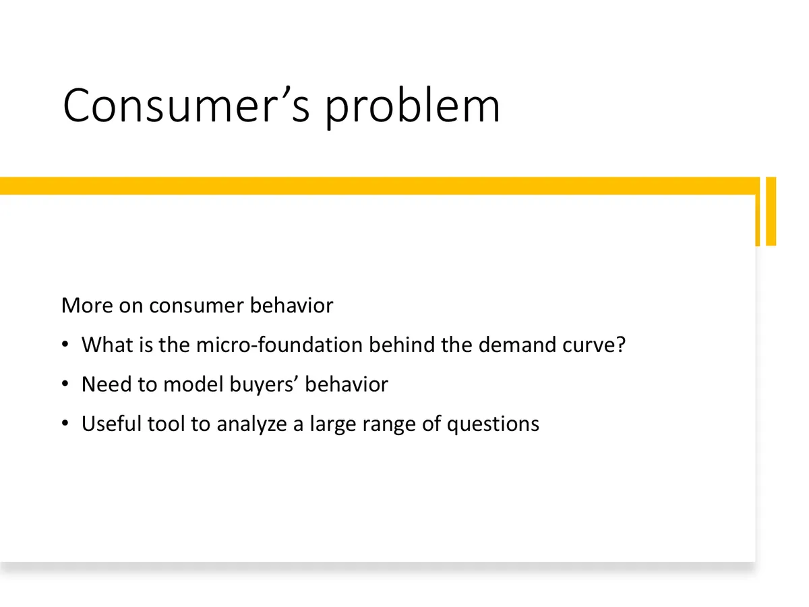
消费者问题（consumer's problem）：为需求曲线找微观基础（micro-foundation）。
为什么要费这个劲？课件给了三条理由：
- 需求曲线不能凭空假定，必须由买者行为推导出来，否则后面所有供需分析都是空中楼阁。
- 有了买者模型，能回答的问题一下子变多：涨价让他变差了多少？两种税他更恨哪一种？芯片厂在技术进步中是赚还是亏？
- 这套工具能复用：劳动供给（工作还是闲暇）、储蓄、保险，都是同一个约束优化问题换了包装。
注意副标题里的括号：约束优化（constrained optimization）。这是全讲的技术内核——在限制条件下求最大。
幻灯片原文 / 板书
Consumer’s problem --- More on consumer behavior What is the micro-foundation behind the demand curve? Need to model buyers’ behavior Useful tool to analyze a large range of questions
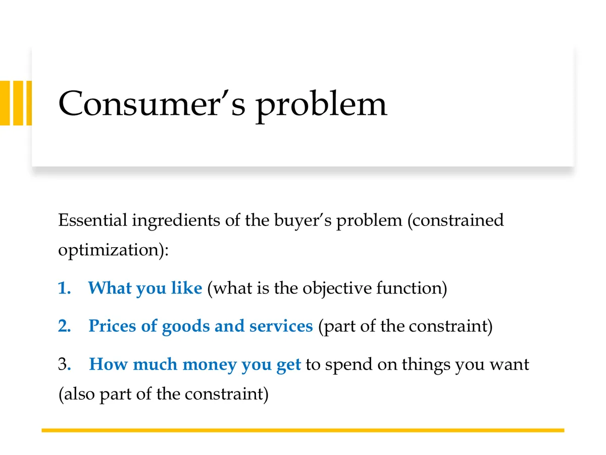
买者问题只需要三样原料：
- 你喜欢什么（what you like）——目标函数，也就是偏好。
- 价格（prices）——约束的一部分。
- 你有多少钱可花（income）——约束的另一部分。
写成数学就是 max U(x, y) s.t. Px·x + Py·y ≤ I：U 是效用，x、y 是两种商品的数量，Px、Py 是它们的价格，I 是收入。
这三样缺一不可。只谈偏好不谈价格，那是心理学；只谈价格不谈偏好，那是记账。经济学的问题是：在你负担得起的那些组合里，挑你最想要的那一个。
幻灯片原文 / 板书
Consumer’s problem --- Essential ingredients of the buyer’s problem (constrained optimization): What you like (what is the objective function) Prices of goods and services (part of the constraint) 3. How much money you get to spend on things you want (also part of the constraint)
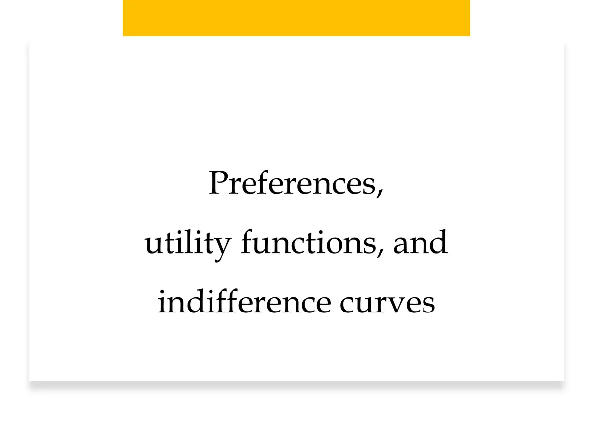
过渡页：接下来进入第一块积木——偏好、效用函数与无差异曲线（preferences, utility functions, and indifference curves）。
这三样东西说的是同一件事的三种语言：偏好是「排序」，效用函数是「给排序打分」，无差异曲线是「把打同样的分的篮子连成线」。本讲主要用第三种，因为它能画在纸上。
还有一个技术要点：这里用的是序数效用（ordinal utility）——效用的绝对数值没有意义（说「这个篮子值 100 分」不传递任何信息），有意义的只是排序。所以无差异曲线比效用函数更好用：它只保留排序，把不能比较的部分全部画掉。
幻灯片原文 / 板书
Preferences, utility functions, and indifference curves
先看「你喜欢什么」有多主观。课件连抛三个问题：
- 你愿意住校和同学一起，还是在校外租房？
- 你愿意和爱你的人结婚，还是和漂亮的人、或性格好的人结婚？或者一辈子不结婚？
- 你更喜欢周杰伦还是蔡徐坤？
这三个问题没有标准答案，每个人的排序都不一样。经济学的态度是：不评判你的排序，只用你的排序。后面的所有分析，都建立在「你已经有一个稳定的偏好」这个前提上。
幻灯片原文 / 板书
What you like: taste, or preferences --- Would you rather live on campus together with your classmates, or live in a rented house outside campus? Would you rather get married with someone you love or with someone who is beautiful or someone who has a great personality? Or stay unmarried you whole life? Who do you like better? Jay Chou or Cai Xukun?
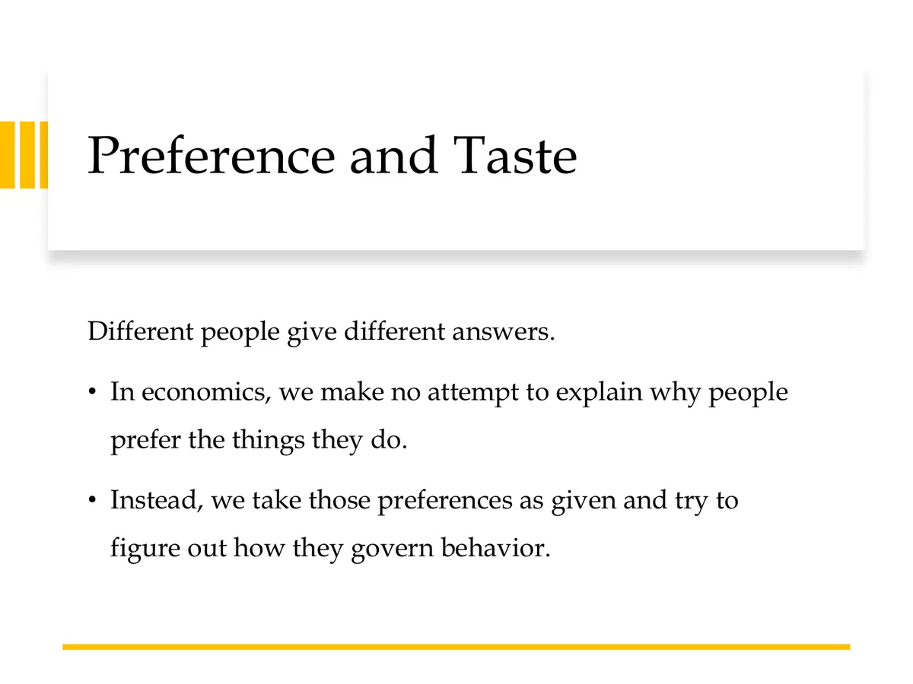
面对上一页那些分歧，经济学的处理方式很干脆：不解释偏好从哪来。
经济学不打算解释人为什么偏好这些东西而不是那些东西（we make no attempt to explain why people prefer the things they do）。
我们把偏好当作给定（take as given），只研究它如何支配行为。这是一种方法论上的自我克制：一旦开始争论「你为什么喜欢这个」，经济学就变成了心理学或伦理学，就没法做可检验的预测了。
注意「给定」不等于「不变」。口味当然会变，但模型里先把它固定住，等技术进步、广告、习惯养成这些因素进来时再放松。
幻灯片原文 / 板书
Preference and Taste --- Different people give different answers. In economics, we make no attempt to explain why people prefer the things they do. Instead, we take those preferences as given and try to figure out how they govern behavior.
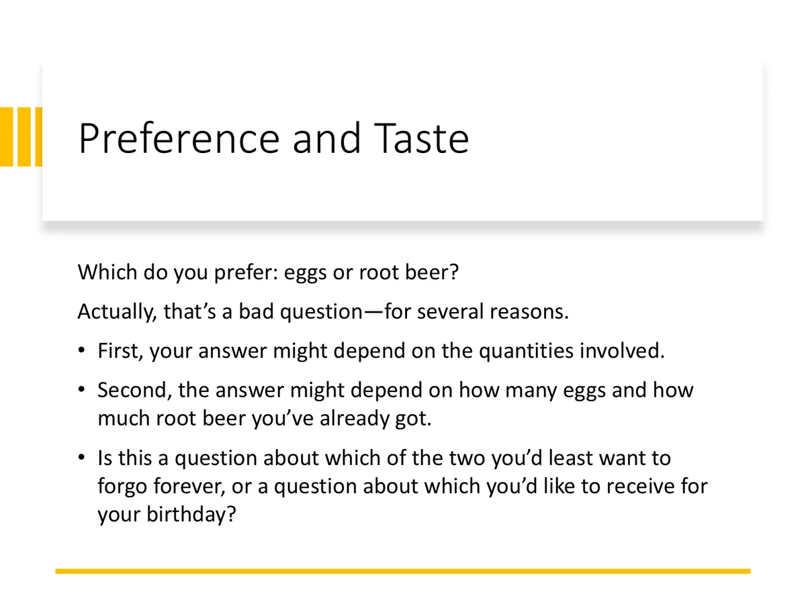
「你更喜欢鸡蛋还是根汁汽水？」——课件说这是个坏问题，理由有三：
- 答案取决于数量：一个鸡蛋和一大桶根汁汽水比，和十个鸡蛋比，答案不同。
- 答案取决于你已经有多少：刚吃完五个鸡蛋的人和三天没吃东西的人，选择不同。
- 答案取决于情境：是问「永远放弃哪一个」，还是问「生日想要哪一个」？
所以要给偏好一个严格的定义，它必须定义在商品篮子（basket）上：一个篮子就是「若干个鸡蛋 + 若干瓶根汁汽水」的组合。比较的对象是篮子，不是商品。
幻灯片原文 / 板书
Preference and Taste --- Which do you prefer: eggs or root beer? Actually, that’s a bad question—for several reasons. First, your answer might depend on the quantities involved. Second, the answer might depend on how many eggs and how much root beer you’ve already got. Is this a question about which of the two you’d least want to forgo forever, or a question about which you’d like to receive for your birthday?
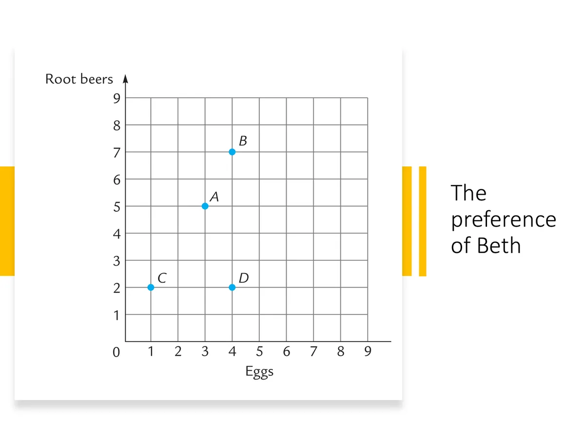
现在有了主角：Beth。她的可选篮子横轴是鸡蛋、纵轴是根汁汽水。
先比 A 和 B。A 是 3 个鸡蛋 + 5 瓶根汁汽水，B 是 4 个鸡蛋 + 7 瓶根汁汽水。B 两样都更多——只要 Beth 两样都喜欢、且总是偏好更多，答案就毫无悬念：她选 B。
这条假设叫非饱和（nonsatiation，也叫「more is better」）。它听起来无害，但后面推出「无差异曲线向下倾斜」「最优解一定花光收入」全靠它。图上 B 在 A 的东北方。
幻灯片原文 / 板书
The preference of Beth
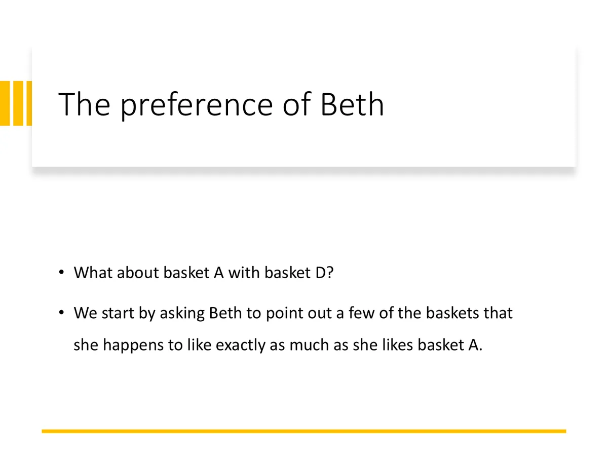
换一对：A 和 D。这次 D 是一个鸡蛋更多、根汁汽水更少的篮子，两个方向相反，光看坐标判不出来。
课件的办法很朴素：请 Beth 把「和 A 一样喜欢」的篮子一个个指出来，标在图上。多标几个点，就能看出规律。
注意这个方法的性质：它不需要 Beth 说出任何数字，也不需要她知道什么叫效用。只要她的偏好是稳定的、能排序的，我们就能把她的偏好「画」出来。
幻灯片原文 / 板书
The preference of Beth --- What about basket A with basket D? We start by asking Beth to point out a few of the baskets that she happens to like exactly as much as she likes basket A.
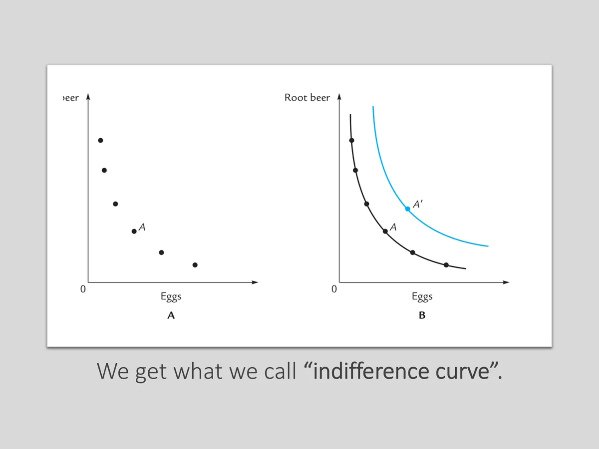
把这些「和 A 一样喜欢」的点连起来，就得到无差异曲线（indifference curve）。
曲线上每一个篮子给 Beth 的满足程度完全相同——她对它们完全无差异，所以叫这个名字。
两个要点：一条曲线代表一个满足水平；想表示不同水平，就要画一族曲线（像等高线地图）。位置越靠东北的曲线，代表的满足程度越高——这正是非饱和假设的直接推论。
幻灯片原文 / 板书
We get what we call “indifference curve”.
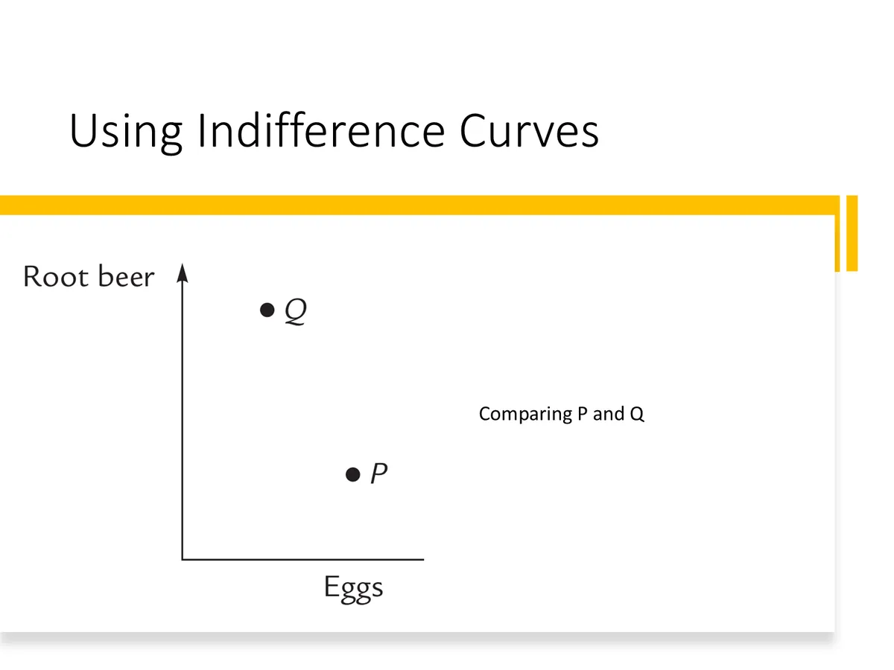
现在用曲线来回答实际问题：P 和 Q 哪个好？
Q 在 P 的西北方向：根汁汽水更多，鸡蛋更少。光看坐标，说不清。正确做法是画一条经过 P 的无差异曲线，再看 Q 落在它的哪一侧。
这一步是本讲的第一个方法论要点：比较两个篮子，不是比较它们的坐标，而是比较它们相对于某条无差异曲线的位置。坐标只是入场券。
幻灯片原文 / 板书
Using Indifference Curves --- Comparing P and Q
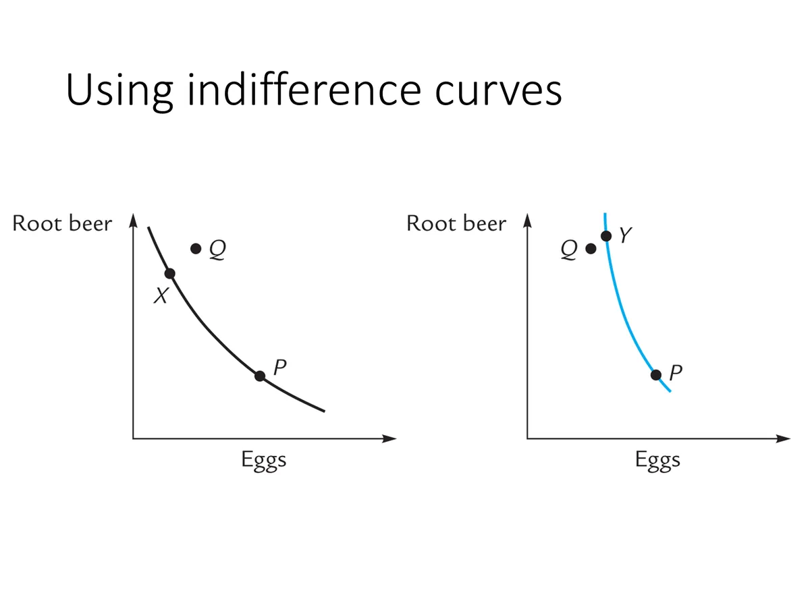
两幅对照图，横轴都是鸡蛋、纵轴都是根汁汽水。
- 左图：画一条经过 P（和 X）的无差异曲线，Q 落在这条线的外侧（上方），所以 Q 比 P 好。
- 右图：把曲线画得更陡（经过 P 和 Y），Q 就落到了曲线的内侧（左侧），此时 Q 比 P 差。
同一对点，结论相反。这说明：排序结果由曲线的形状（也就是偏好）决定，而不是由「谁看起来更高」决定。图不能乱画，画之前先想清楚偏好长什么样。
幻灯片原文 / 板书
Using indifference curves
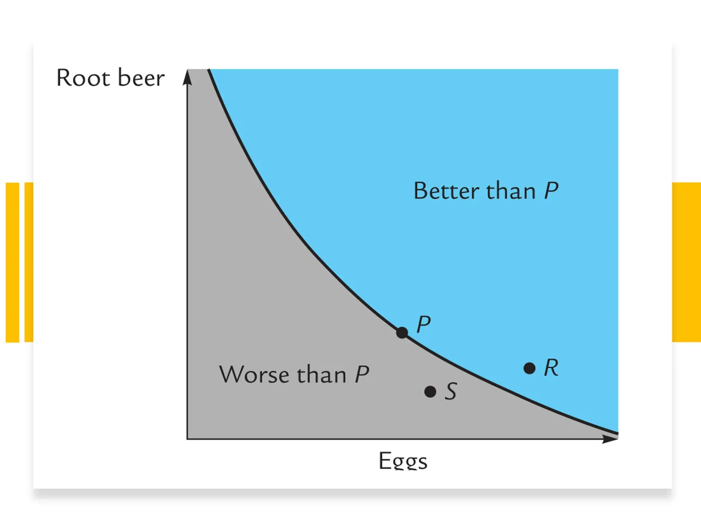
上一页那张图的「补完版」，也是无差异曲线最有用的一张图。
经过 P 的无差异曲线把第一象限切成两半：
- 蓝色区域（曲线的东北侧）：所有比 P 好的篮子。
- 灰色区域（曲线的西南侧）：所有比 P 差的篮子。
- 曲线本身：所有与 P 一样好的篮子。
图上 R 落在蓝区，S 落在灰区，两个点都不在曲线上。这张图告诉我们：一条曲线其实是一个「分区工具」，它把整个平面按满足程度切成了三层。
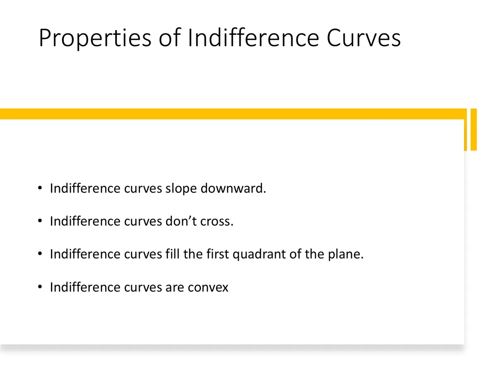
无差异曲线的四条性质，每一条都能从假设推出来：
- 向下倾斜：由非饱和。多给你一个鸡蛋，必须拿走一些根汁汽水，你才肯说「一样好」。
- 不相交：由传递性（transitivity）。若两条线相交，交点处的那个篮子既属于高水平又属于低水平，自相矛盾。
- 充满第一象限：由完备性（completeness）。任何篮子你都能排序，所以任何点都必在某一族曲线上。
- 凸向原点：由边际价值递减。这条最不直观，下一页专门讲。
这四条是后面所有图形分析的「交通规则」，违反任何一条，结论就会崩。
幻灯片原文 / 板书
Properties of Indifference Curves --- Indifference curves slope downward. Indifference curves don’t cross. Indifference curves fill the first quadrant of the plane. Indifference curves are convex
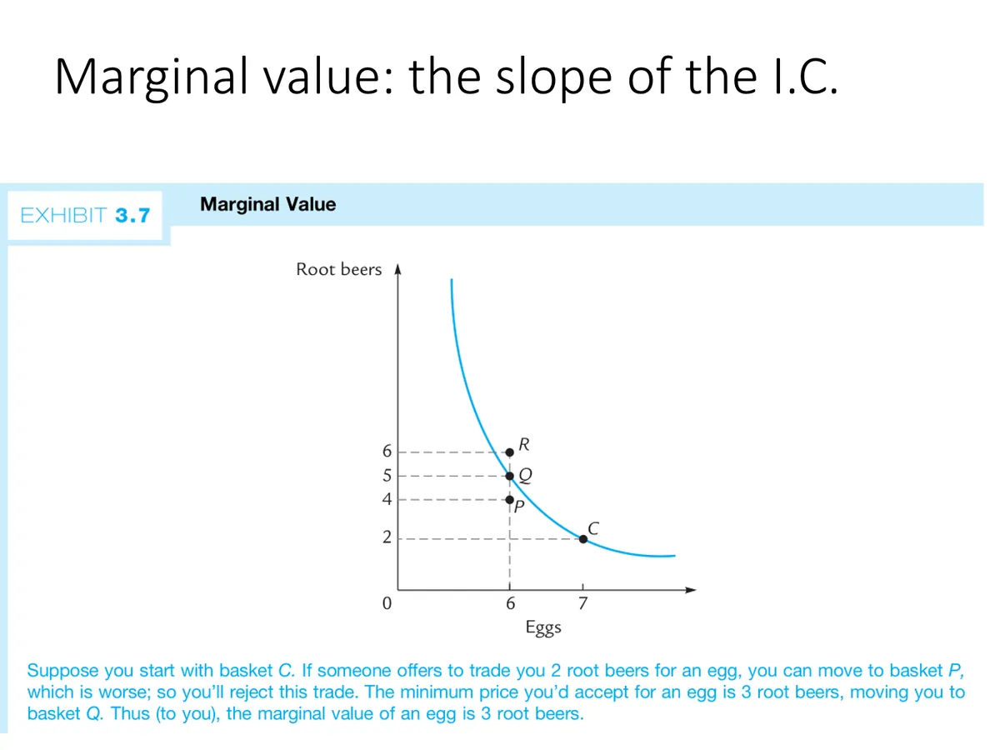
沿着一条无差异曲线移动，斜率（取绝对值）有一个名字：边际价值（marginal value），也叫边际替代率（marginal rate of substitution，MRS）。
MRS = MUx / MUy
MUx 是多消费一单位 x 带来的额外效用（边际效用），MUy 同理。含义：为了多得到一个 x，你愿意放弃多少个 y。斜率越陡，说明 x 在你眼里越值钱。
用微积分的语言说，沿无差异曲线 MUx·dx + MUy·dy = 0，所以 dy/dx = -MUx/MUy——这就是斜率的来源，不用背。
两个常见误解：一是以为 MRS 是「固定的换算比例」——不对，它沿曲线逐点变化，这正是凸性的含义；二是以为 MRS 可以跨人比较——也不行，它是每个人自己的心理价位，只对自己有效。
幻灯片原文 / 板书
Marginal value: the slope of the I.C.
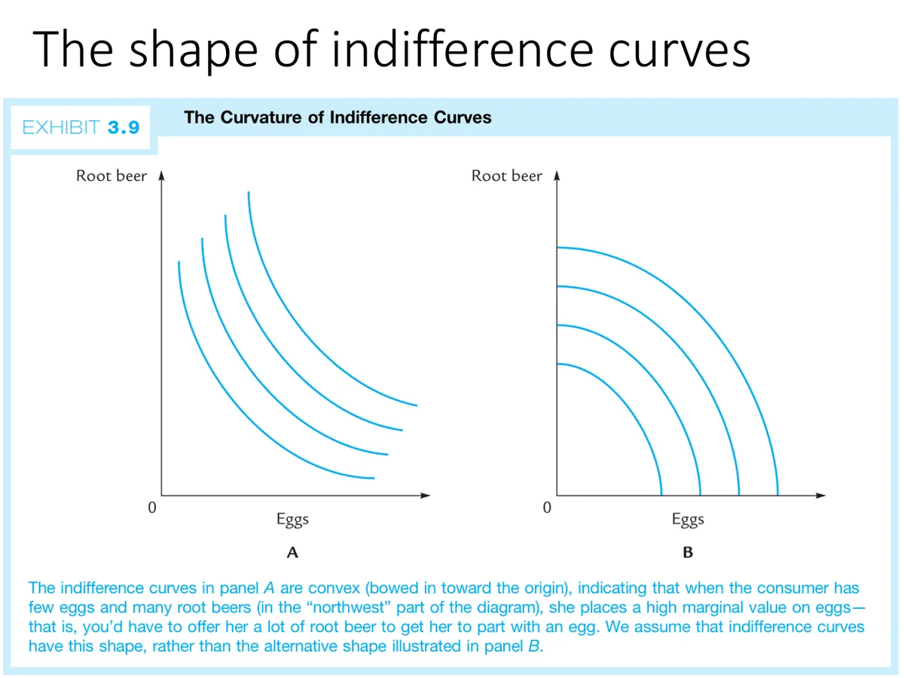
课件用 EXHIBIT 3.9 对比两种形状，横轴鸡蛋、纵轴根汁汽水。
- A 图：凸向原点（convex，向原点弯曲）。这是标准形状。看图注的解释：在图的西北角，鸡蛋少、根汁汽水多，此时鸡蛋的边际价值很高，要让你放弃一个鸡蛋，得给你很多根汁汽水，所以曲线很陡；越往东南走，鸡蛋越多、越不值钱，曲线越平。
- B 图：凹向原点（concave）。这意味着你越有钱越想要极端组合，不符合我们对「多样化偏好」的观察。
所以经济学假定 A 而不是 B。这就是「凸性」的经济内容：边际价值递减。
幻灯片原文 / 板书
The shape of indifference curves
画二维图必须先解决一个技术问题：现实里有几万种商品，图上只有两根轴。复合商品约定（the composite-good convention）就是干这件事的。
课件的说法是：为了画无差异曲线，我们必须假设世界上只有两种商品——看起来很受限，其实不然。
为什么不受限？因为「另一种商品」不必是单一商品，它可以是一个大杂烩。下面两页解释怎么把几万种商品塞进一根轴。
幻灯片原文 / 板书
The Composite-Good Convention --- In order to draw indifference curve diagrams, we must assume that there are only two goods in the world. Seems restricting, yet in fact it is not.
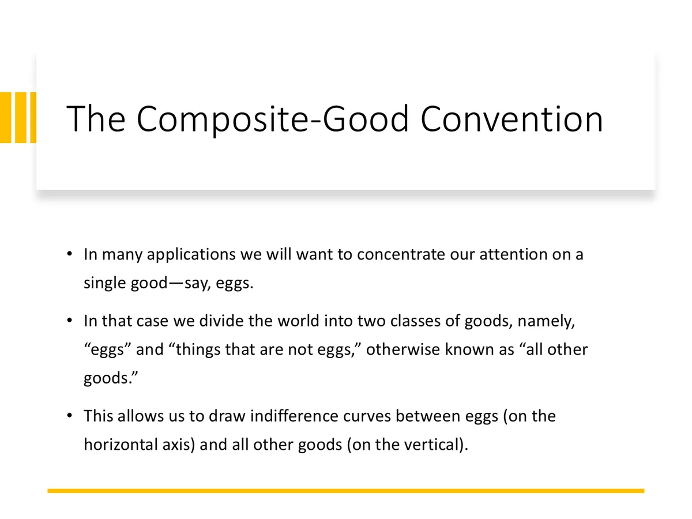
具体做法：把世界切成两类——「鸡蛋」和「不是鸡蛋的东西」，后者官方说法叫「其他所有商品」（all other goods）。
于是横轴放鸡蛋，纵轴放「其他所有商品」，无差异曲线照画不误。
这个技巧的威力在于：任何时候你只关心一种商品（比如鸡蛋、房租、汽油），都可以用这个方法把它单独拎出来，其余全部打包。后面讲劳动供给时，「其他所有商品」直接变成「收入」，也是同一个操作。
幻灯片原文 / 板书
The Composite-Good Convention --- In many applications we will want to concentrate our attention on a single good—say, eggs. In that case we divide the world into two classes of goods, namely, “eggs” and “things that are not eggs,” otherwise known as “all other goods.” This allows us to draw indifference curves between eggs (on the horizontal axis) and all other goods (on the vertical).
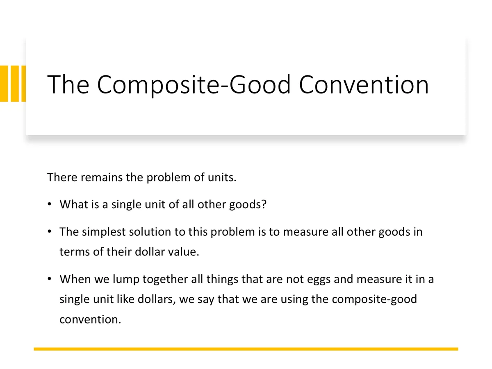
还剩一个单位问题：一单位「其他所有商品」到底是多少？一斤？一件？
最省事的答案是：用美元计价。把所有非鸡蛋的东西加总，按它们的货币价值来度量，一单位就是一块钱。
这么一打包，我们就说使用了复合商品约定。好处是纵轴的单位和收入、价格统一了；代价是纵轴的「数量」变成了「花了多少钱」，读图时要记得这一点。
幻灯片原文 / 板书
The Composite-Good Convention --- There remains the problem of units. What is a single unit of all other goods? The simplest solution to this problem is to measure all other goods in terms of their dollar value. When we lump together all things that are not eggs and measure it in a single unit like dollars, we say that we are using the composite-good convention.
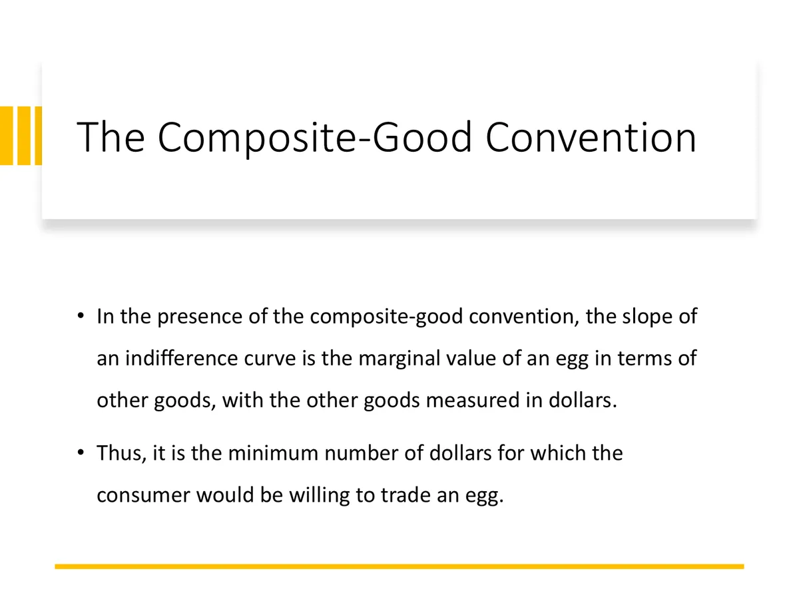
有了这个约定，无差异曲线的斜率有了非常直接的解释：
斜率 = 一个鸡蛋的边际价值，用其他商品（也就是美元）来度量。
说白了，它等于你愿意接受的最低卖价（the minimum number of dollars for which you would trade an egg）：低于这个价你不卖，高于这个价你卖。
这句话请记牢：无差异曲线的斜率就是你的保留价格（reservation price）。后面所有的「支付意愿」「消费者剩余」，都是从这句话长出来的。
幻灯片原文 / 板书
The Composite-Good Convention --- In the presence of the composite-good convention, the slope of an indifference curve is the marginal value of an egg in terms of other goods, with the other goods measured in dollars. Thus, it is the minimum number of dollars for which the consumer would be willing to trade an egg.
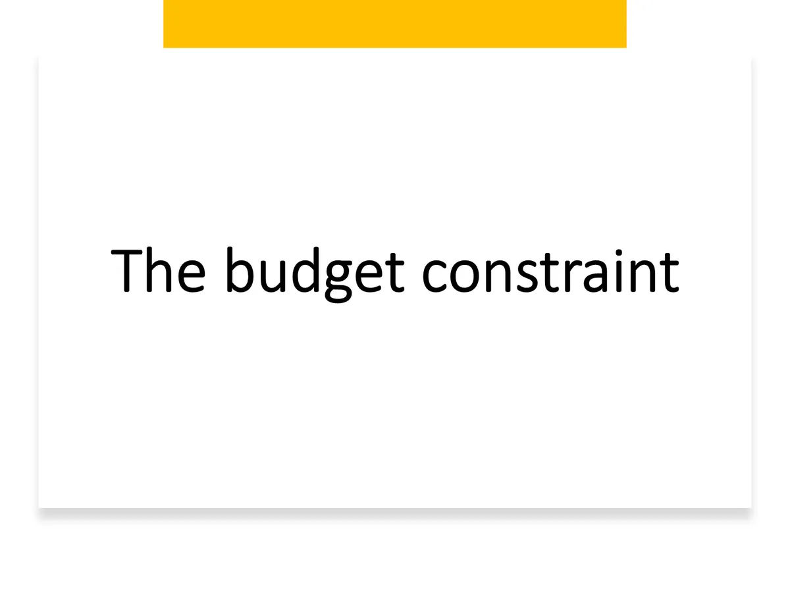
过渡页：第一块积木（偏好）讲完了，进入第二块——预算约束（the budget constraint）。
到这里我们知道了「你想要什么」，还差「你能要什么」。把这两样叠在一起，才有选择。
顺便交代一下顺序为什么不能颠倒：先讲偏好、后讲约束，是因为「欲望」和「能力」是两套独立的信息。先摸清偏好的形状，后面每换一种价格或收入，我们只需要动约束那条线，偏好不用重画。
幻灯片原文 / 板书
The budget constraint
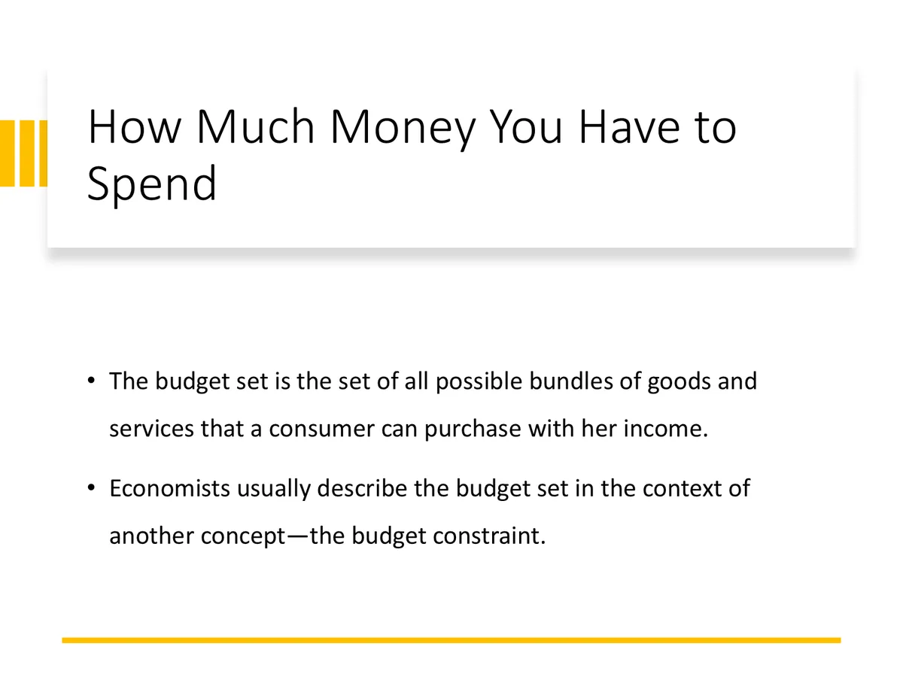
预算集（budget set）：在给定收入下，消费者买得起的所有商品与服务篮子的集合。
经济学家一般不直接画这个集合，而是画它的边界——预算约束线（budget constraint）：刚好花光收入的那些篮子。
两者关系：预算集是线左下方那一整块三角形（含边界），预算线只是它的斜边。后面的最优化，本质上就是「在这个三角形里找最好的点」。
术语提醒：英文里 budget set 是集合，budget constraint 是边界，中文有时都译成「预算约束」，读到时要看上下文判断指的是哪一个。
幻灯片原文 / 板书
How Much Money You Have to Spend --- The budget set is the set of all possible bundles of goods and services that a consumer can purchase with her income. Economists usually describe the budget set in the context of another concept—the budget constraint.
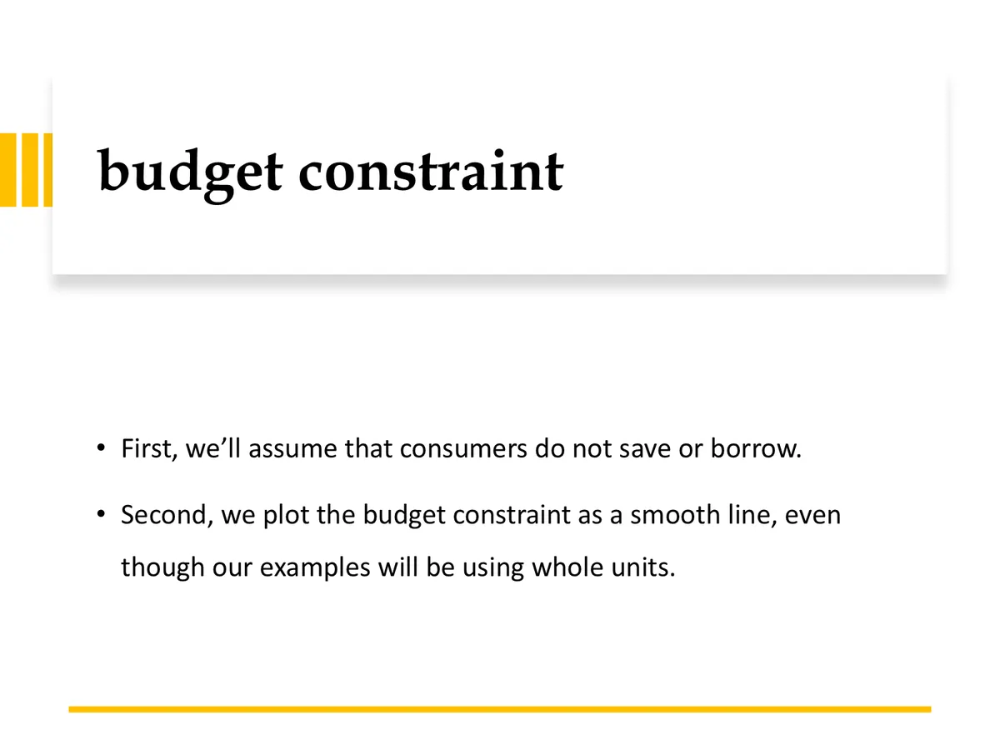
为了画图方便，课件加了两个简化假设：
- 消费者不储蓄也不借贷。现实中很多人会存钱、会刷卡，但先把这个渠道关掉，模型才能聚焦在「买什么」上。
- 把预算线画成平滑的直线，即使例子里的商品只能按整数买（你不能买 2.7 个鸡蛋）。这是纯技术处理，不影响任何结论，只是让切线好画。
第一条假设后面会放开（讲跨期选择时），第二条永远只是画图习惯。
幻灯片原文 / 板书
budget constraint --- First, we’ll assume that consumers do not save or borrow. Second, we plot the budget constraint as a smooth line, even though our examples will be using whole units.
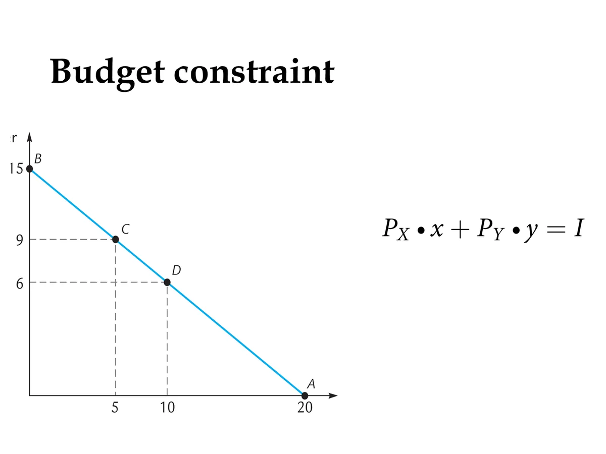
预算约束的几何，横轴是商品 x 的数量、纵轴是另一种商品的数量。
两个截距：全部钱买 y 得到 15，全部钱买 x 得到 20。中间那条直线就是 Px·x + Py·y = I。线上的 C、D 两点代表两种不同的花法：多买 x 就必须少买 y。
关键在斜率：
斜率 = -Px / Py
它是市场给你的交换比率——用 y 表示的一个 x 的价格。比如斜率绝对值 0.75，就意味着市场上 1 个 x 值 0.75 个 y。（图上的点是示意，考试一律按公式算。）
幻灯片原文 / 板书
The budget constraint --- Budget constraint
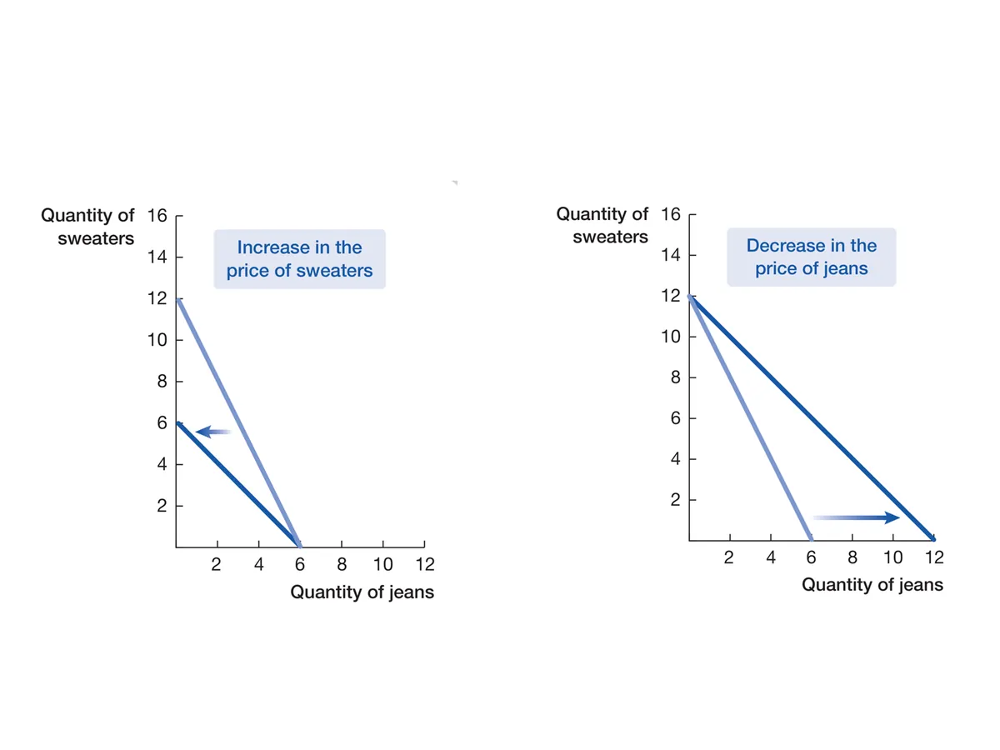
价格变化怎么改变预算线？两种情形，都靠「截距变、斜率变」来读。
- 毛衣涨价（左图）：纵轴截距从 12 掉到 6，横轴截距 6 不动，整条线绕 (6, 0) 点向内旋转，变得更陡。因为另一种商品（牛仔裤）的价格没变，所以那个截距不动。
- 牛仔裤降价（右图）：横轴截距从 6 增到 12，纵轴截距 12 不动，绕 (0, 12) 点旋转，变得更平。
记住这条口诀：哪种商品的价格变，就绕着另一种商品的截距转。
幻灯片原文 / 板书
Price change
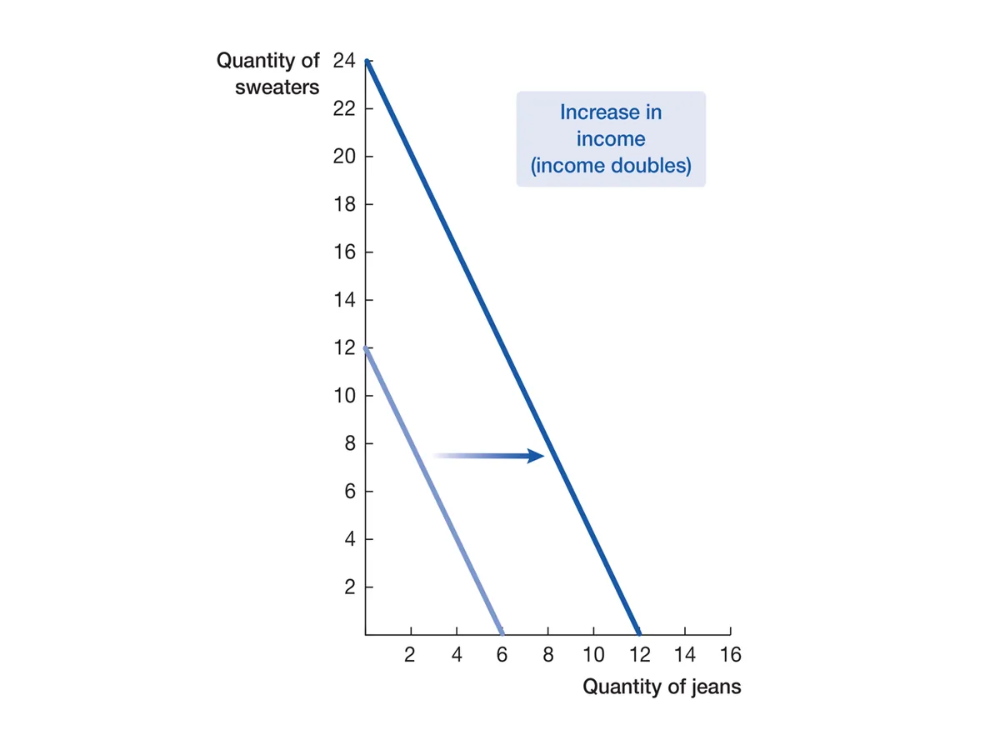
收入变化则完全不同：横轴截距从 6 变成 12，纵轴截距从 12 变成 24，正好都是翻倍。
几何上是平行外移——斜率一点没变。原因是两种商品的相对价格没变，市场给你的交换比率还是那个数，只是你的购买力整体放大了。
这条区别是后面分析「价格效应 = 替代效应 + 收入效应」的几何基础：价格变化同时动了斜率和购买力，收入变化只动购买力。
幻灯片原文 / 板书
Income change
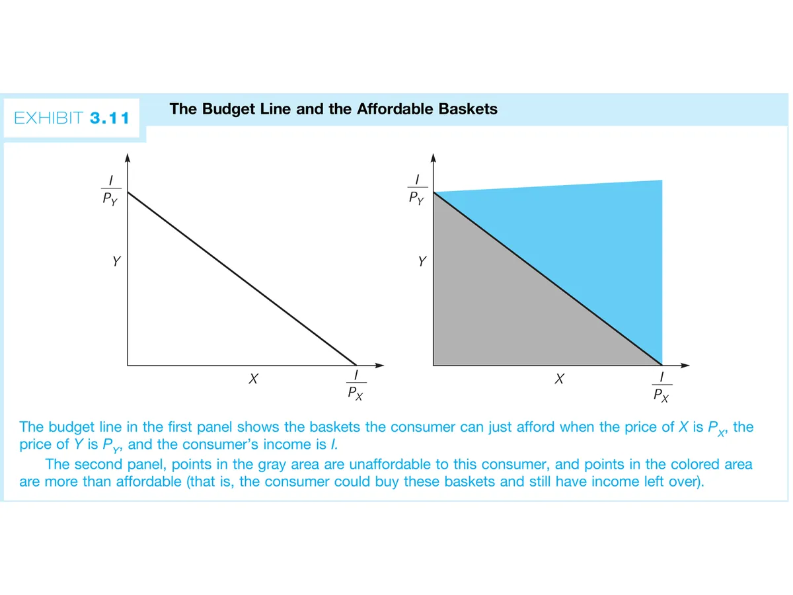
EXHIBIT 3.11：把预算线两侧的区域标出来。
- 线上：刚好花光收入。
- 左下灰色区域：买得起还有余钱的组合，也就是预算集。
- 右上蓝色区域：买不起的组合。
读这张图时注意：预算集是一个闭的三角形（含边界），而不是只有一条线。最优点可能落在三角形内部（钱没花完）吗？在非饱和假设下不会——只要还能多买一点，你就一定会多买，所以最优点永远在斜边上。这条结论第 29 页会再用一次。
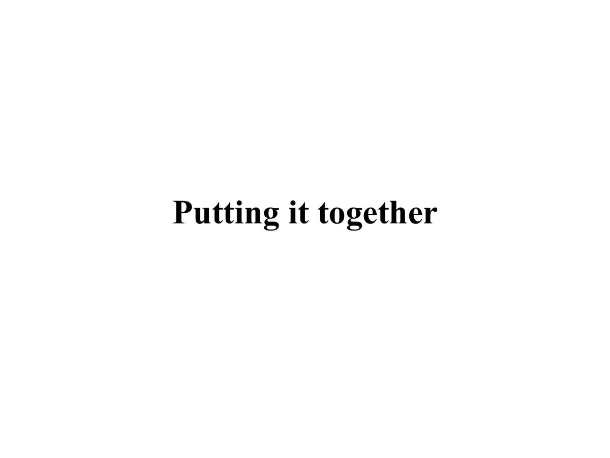
现在把两块积木叠起来：同一张图上，既有预算三角形，又有一族无差异曲线。
问题变成一句话：在这个三角形里，我能摸到的最高那条无差异曲线是哪一条？
答案的形状是可以预见的：那条曲线既不能整条落在三角形外（否则买不起），又不能再往外挪一点（否则还能更好）。它必然与预算线在某一点相切（tangency）。这就是最优选择的几何图像。
幻灯片原文 / 板书
Putting it together
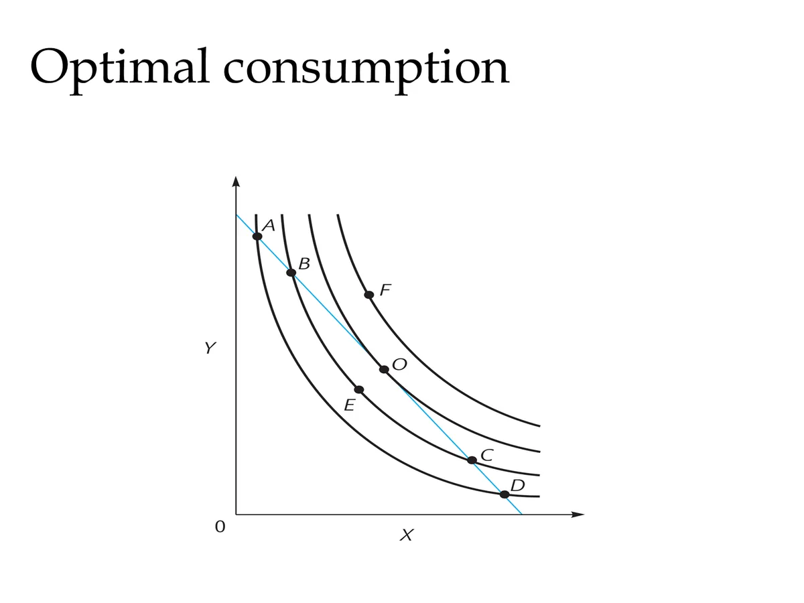
最优消费（optimal consumption）的三个特征，考试常考：
- 花光收入：最优点在预算线上，不在三角形内部。理由是非饱和。
- 落在最高的可达无差异曲线上：再往外一条就买不起了。
- 在该点相切：无差异曲线的斜率 = 预算线的斜率，即 MRS = Px / Py。
第三条是最有用的操作形式：边际替代率等于价格比。左边是你的心理价位，右边是市场价位，两者相等时你才停止调整。
幻灯片原文 / 板书
Optimal consumption
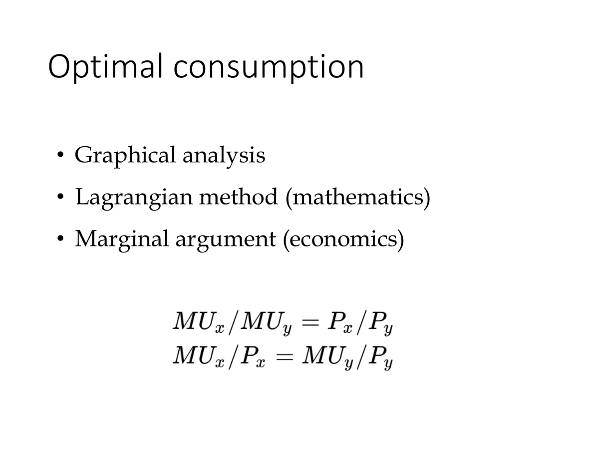
同一个结论，课件给了三种讲法，都要会：
- 图形：相切。直观，但只能处理两种商品，且要画得准。
- 拉格朗日（Lagrangian）：设 L = U(x, y) + λ(I - Px·x - Py·y)。对 x、y 求一阶条件得 MUx = λ·Px、MUy = λ·Py，两式相除就回到 MUx/MUy = Px/Py。这里的 λ 是收入的边际效用：多一块钱能带来多少效用。
- 边际推理（marginal argument）：把钱花在 x 上，最后一块钱买到的边际效用是 MUx/Px；花在 y 上是 MUy/Py。两者不等，就把钱从低的一方挪到高的一方；相等时，无钱可挪。
三种讲法结论一致。答题时任选一种，但要说清用的是哪一种。
幻灯片原文 / 板书
Optimal consumption --- Graphical analysis Lagrangian method (mathematics) Marginal argument (economics)
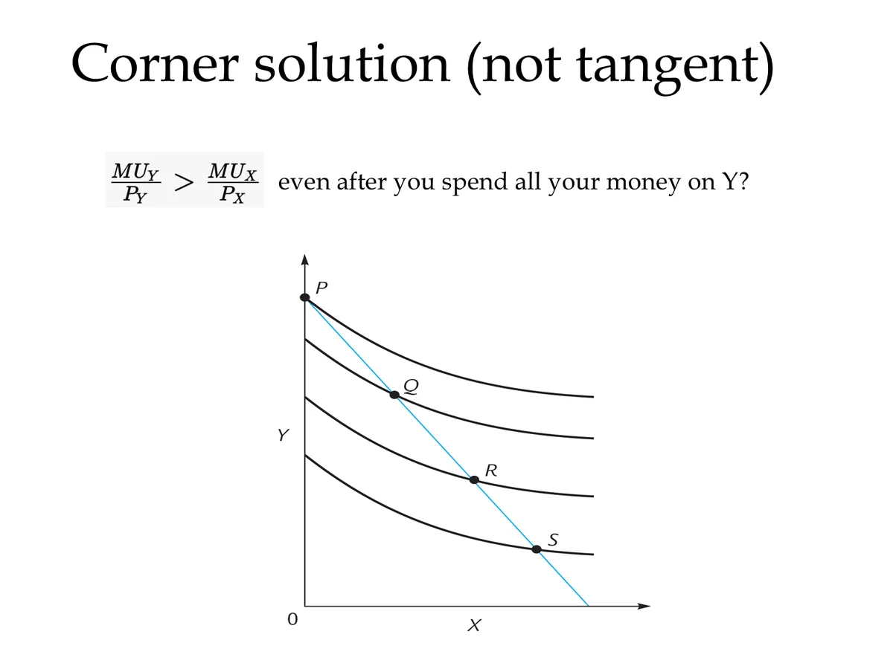
角点解（corner solution）：最优点不在切点，而在坐标轴上。
看图：预算线从纵轴上的 P 点出发向右下延伸；三条无差异曲线分别与预算线交于 Q、R、S——没有一条相切，每条都还往外走。最优点就是 P 点本身：x = 0，钱全花在 y 上。
判定条件写在图上：
MUy / Py > MUx / Px
即使你已经把所有的钱都花在 y 上，这个不等式依然成立——意思是：连第一个 x 都不值得买。这就是角点解的标志。典型例子：一个滴酒不沾的人面对酒和饭，或者你对某种商品完全无感。
幻灯片原文 / 板书
A corner solution --- Corner solution (not tangent) --- even after you spend all your money on Y?
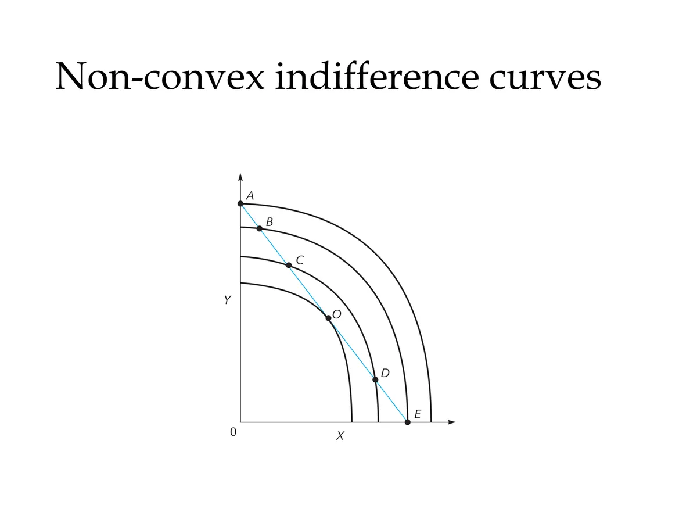
如果偏好不是凸的，相切这件事会彻底失效。
把无差异曲线画成凹向原点（non-convex，向外鼓），它和预算线依然可以相切，但那个切点给出的是最差的可行点，而不是最好的：沿着预算线往两边移动，你都能爬到更高的曲线上。真正的最优解落在端点。
所以结论要修正一句：相切只是最优的必要条件，不是充分条件；要保证「相切 = 最优」，必须额外假定偏好凸（也就是边际价值递减）。这条在考试里常以「判断对错」的形式出现。
幻灯片原文 / 板书
Non-convex indifference curves
过渡页：消费者决策框架的应用（applications）。
到这里，理论部分结束了——偏好、无差异曲线、预算约束、相切条件，四件套齐了。接下来课件用它做四个应用，一个比一个有现实感：
- 价格指数：涨价到底让人变差多少？
- 口味差异：跨国消费差异真的是「口味不同」吗？
- 最不坏的税：同样收 100 块，工资税和人头税你选哪个？
- 推导需求曲线：把前面所有东西收口。
幻灯片原文 / 板书
Applications of the consumer decision framework
应用一：价格指数（price indices）。
问题很实际：去年到今年，物价涨了，你姑且知道自己「变差了」，但能不能给出一个数字？工资要按多少调整才不亏？养老金要不要指数化？
这类问题的共同点是：需要一个把「很多种价格变化」压缩成「一个数」的办法。这就是价格指数要干的事。
难点在哪？各种商品的价格并不是同比例变动的：猪肉涨 20%、手机跌 5%、房租涨 3%。而且人会调整篮子——什么贵就少买什么。指数必须在这两件事之间做取舍，取舍方式不同，就有了后面拉氏和帕氏的分歧。
幻灯片原文 / 板书
Application #1 Price Indices
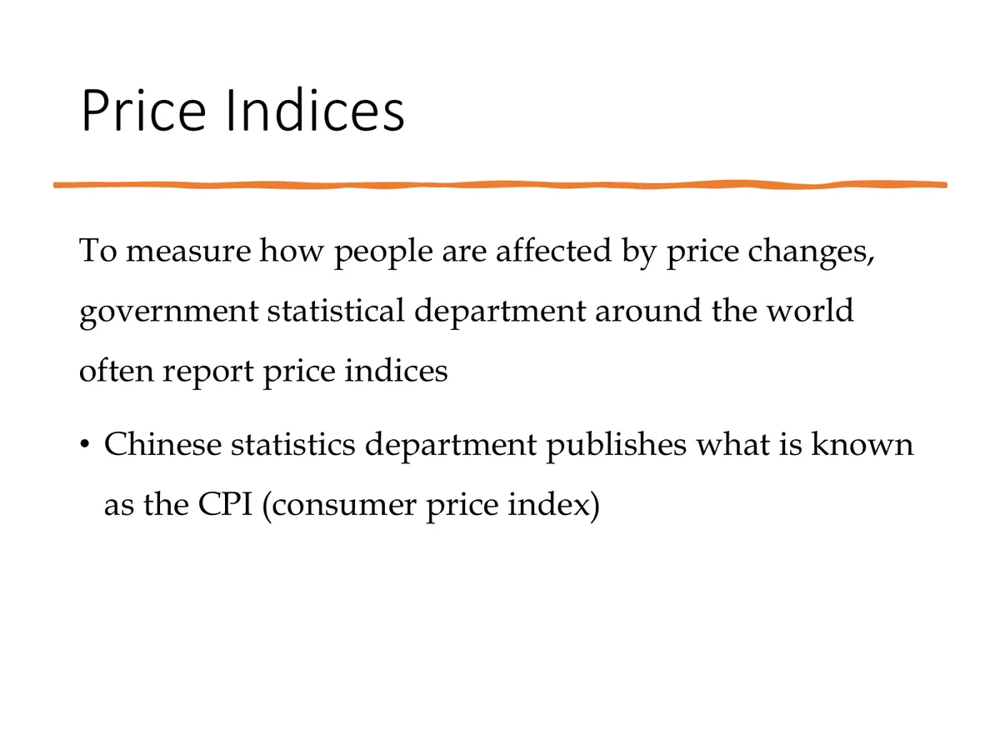
各国的统计部门都在做这件事。中国由国家统计局发布 CPI（consumer price index，居民消费价格指数），每月公布。
它的用途远不止「看看通胀」：最低工资、养老金、劳动合同里的调薪条款、央行定利率，都以它为参照。所以 CPI 怎么算，不是学术问题，是分钱的问题——算高了有人吃亏，算低了也有人吃亏。
技术上，CPI 是一个加权平均：把居民消费分成食品烟酒、居住、交通通信等大类，每一类按住户调查得到的支出占比给权重，再加权汇总。权重每隔几年要调整一次，因为消费结构本身在变——这也是所有价格指数的软肋。
幻灯片原文 / 板书
Price Indices --- To measure how people are affected by price changes, government statistical department around the world often report price indices Chinese statistics department publishes what is known as the CPI (consumer price index)
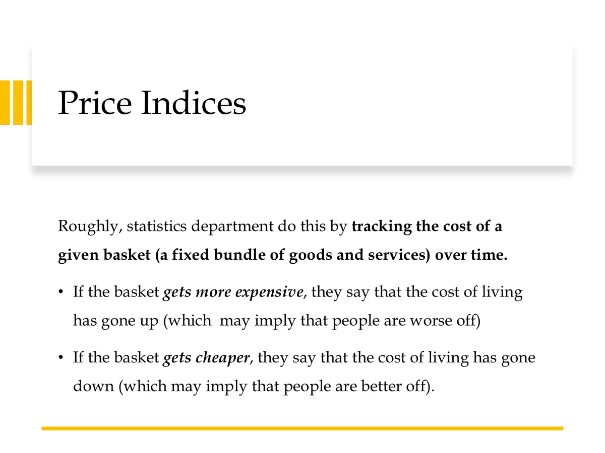
课件先讲粗略的算法：跟踪一个固定篮子（a fixed bundle of goods and services）的成本随时间怎么变。
- 篮子变贵 → 统计部门说「生活成本上升」→ 暗示人们变差了。
- 篮子变便宜 → 说「生活成本下降」→ 暗示人们变好了。
注意「暗示」这个词。篮子成本和生活水平之间不是等号，中间隔着一个假设：你会一直买同样的东西。下一页的例子就是来拆这个假设的。
幻灯片原文 / 板书
Price Indices --- Roughly, statistics department do this by tracking the cost of a given basket (a fixed bundle of goods and services) over time. If the basket gets more expensive, they say that the cost of living has gone up (which may imply that people are worse off) If the basket gets cheaper, they say that the cost of living has gone down (which may imply that people are better off).
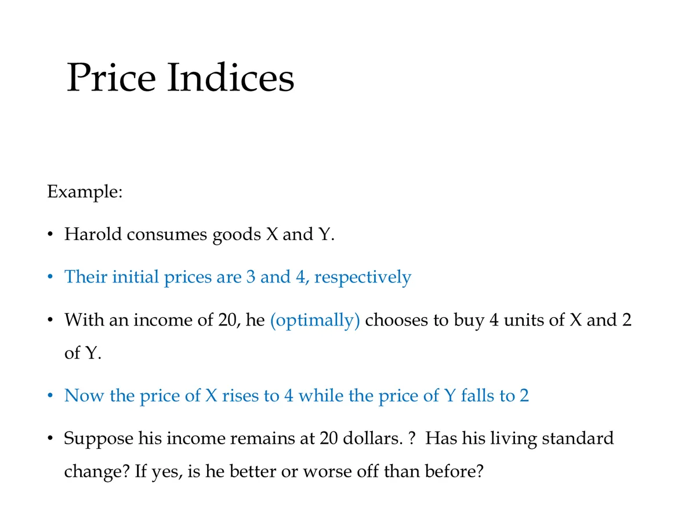
Harold 的例子，全讲最重要的数值例子之一。
他只买两种商品 X 和 Y。初始价格 Px = 3、Py = 4，收入 I = 20。在这个价格下，他最优地选择买 4 个 X 和 2 个 Y——验算：3×4 + 4×2 = 12 + 8 = 20，正好花完。
现在价格变了：Px 涨到 4，Py 跌到 2，收入仍是 20。
问题：他的生活水平变了吗？如果变了，是变好还是变差？
请留意这个例子的设计：两种价格一涨一跌，方向相反。涨价让他少买 X，跌价让他多买 Y，两个效应互相抵消一部分。最后总花费恰好还是 20 美元——这就是为什么「花同样的钱」会被误读成「过得一样好」。
幻灯片原文 / 板书
Price Indices --- Example: Harold consumes goods X and Y. Their initial prices are 3 and 4, respectively With an income of 20, he (optimally) chooses to buy 4 units of X and 2 of Y. Now the price of X rises to 4 while the price of Y falls to 2 Suppose his income remains at 20 dollars. ? Has his living standard change? If yes, is he better or worse off than before?
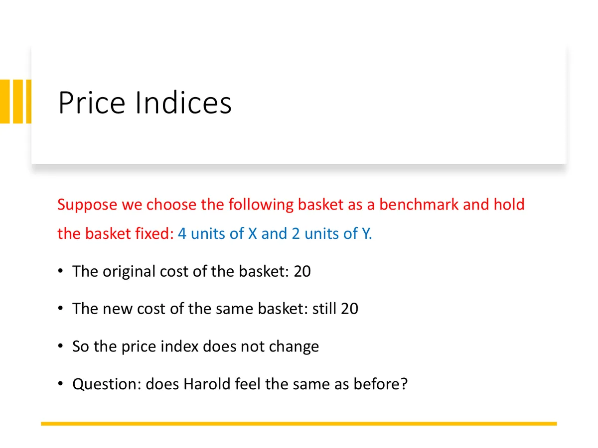
先用「固定篮子」法算一遍。选 O = (4, 2) 作基准篮子并固定住：
- 原价格下的成本：3×4 + 4×2 = 20。
- 新价格下的成本：4×4 + 2×2 = 20。
成本没变，所以价格指数不变，结论是「他的生活水平没有变化」。
但这个结论是错的。下一页用图说明为什么。
先记住矛盾的样子：统计部门会说「物价没变、通胀为零」，而 Harold 的主观感受是「我过得更好了」。两个说法不可能都对。错的一定是那个只看钱的算法。
幻灯片原文 / 板书
Price Indices --- Suppose we choose the following basket as a benchmark and hold the basket fixed: 4 units of X and 2 units of Y. The original cost of the basket: 20 The new cost of the same basket: still 20 So the price index does not change Question: does Harold feel the same as before?
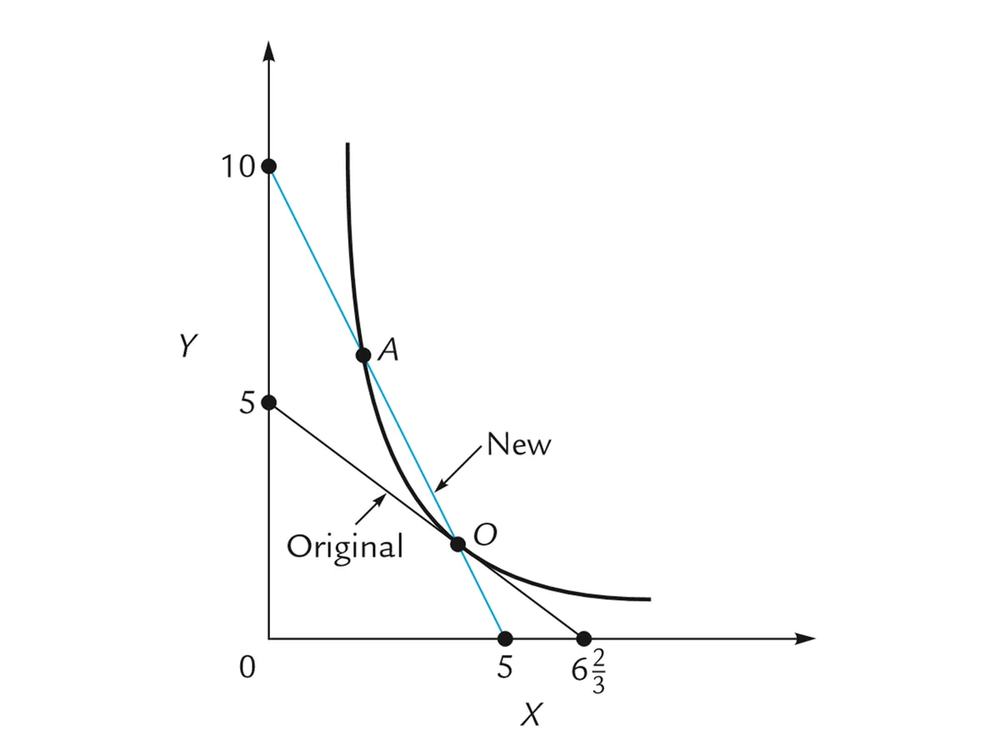
图上两条预算线，横轴 X、纵轴 Y。
- 原预算线（黑色）：纵轴截距 20/4 = 5，横轴截距 20/3 = 6⅔，斜率 -0.75。
- 新预算线（蓝色）：纵轴截距 20/2 = 10，横轴截距 20/4 = 5，斜率 -2。
两条线都经过 O = (4, 2)，这就是「篮子 O 在新旧价格下都正好 20 块」的几何含义。
关键在于：新价格下他能够到 A 点——那是在更高的无差异曲线上。所以他明显变好了，而固定篮子法说他「没变」。指数在这里漏掉了整整一块福利改进。
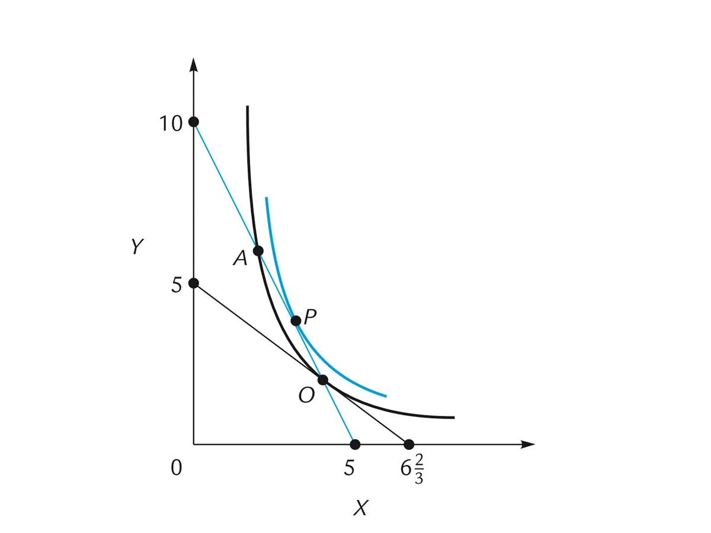
换一个篮子试试。选 P = 新价格下的最优选择（也就是 A 那个位置所对应的篮子）。
- 它在原价格下要花超过 20——所以它落在原预算线的外面。
- 它在新价格下正好花 20——所以它落在新预算线上。
用它当基准，你会算出：生活成本下降了。这一次方向对了，但幅度又夸大了。
问题出在基准篮子 P 本身：P 是新价格下的选择，在旧价格下他根本买不起。拿一个买不起的篮子当基准，等于假设他从一开始就享受着价格下降的好处——改进被提前算进去了，所以「成本下降」被夸大。
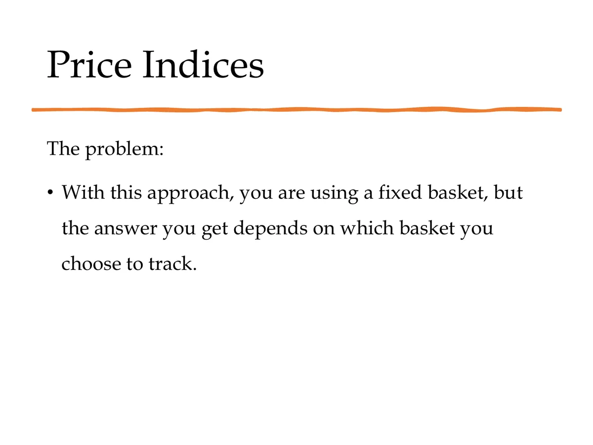
问题暴露得很清楚：
用固定篮子法，你得到的答案取决于你选哪个篮子。
- 选 O（旧篮子）→ 说「没变」，其实他变好了 → 低估了改善。
- 选 P（新篮子）→ 说「降了」，其实降得没那么多 → 高估了改善。
而「选哪个篮子」并没有客观标准。这就是固定篮子法的根本缺陷，下一页给它两个名字。
说穿了：固定权重的指数暗含一个荒唐假设——人不做替代。现实里猪肉贵了就吃鸡肉，房租涨了就合租或搬到远一点。指数把人当成一个照单全收的购物车，于是必然算错。
幻灯片原文 / 板书
Price Indices --- The problem: With this approach, you are using a fixed basket, but the answer you get depends on which basket you choose to track.
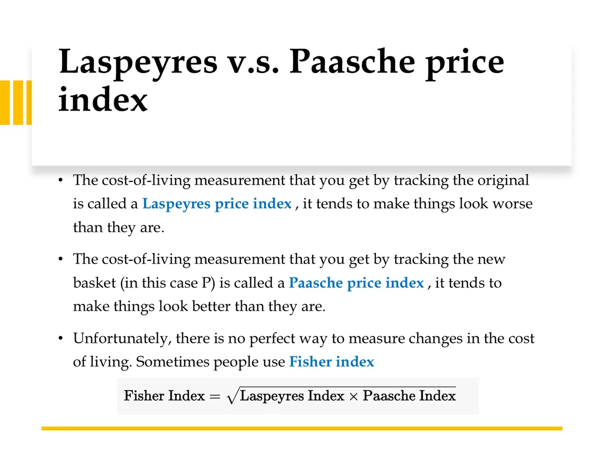
两种经典指数，正好对应上一页的两个选择：
| 指数 | 跟踪的篮子 | 偏差方向 |
|---|---|---|
| Laspeyres（拉氏） | 基期篮子（O） | 倾向高估生活成本上升 |
| Paasche（帕氏） | 当期篮子（P） | 倾向低估生活成本上升 |
| Fisher（费雪） | 两者的几何平均 | 折中 |
读表要点：拉氏指数假定你「照旧买」，忽略了你其实会用变便宜的商品替代变贵的商品——这个替代行为本身就是福利改善，指数没算进去，所以显得生活变差了。这个系统性偏差叫替代偏误（substitution bias）。
课件最后一句是实话：没有完美的方法度量生活成本变化，只能选一个偏差方向你能接受的。
幻灯片原文 / 板书
Laspeyres v.s. Paasche price index --- The cost-of-living measurement that you get by tracking the original is called a Laspeyres price index , it tends to make things look worse than they are. The cost-of-living measurement that you get by tracking the new basket (in this case P) is called a Paasche price index , it tends to make things look better than they are. Unfortunately, there is no perfect way to measure changes in the cost of living. Sometimes people use Fisher index
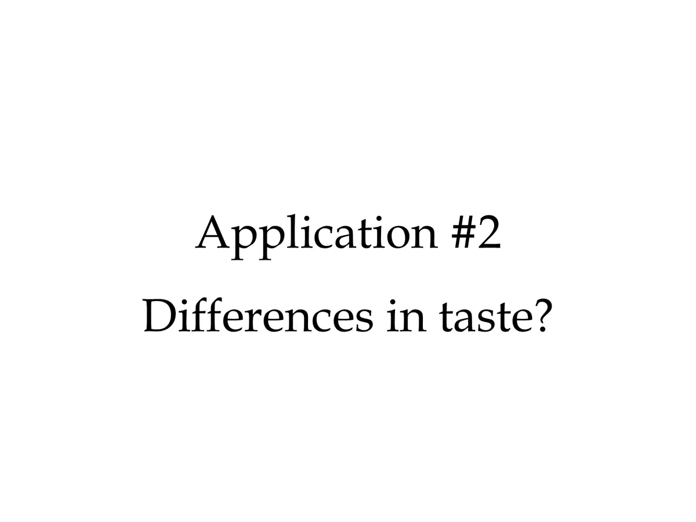
应用二：口味真的有差异吗？（differences in taste）
这一节要回答一个方法论问题：当我们看到「德国人比意大利人吃更多土豆」时，该说「他们口味不同」，还是该说「他们面对的价格不同」？
幻灯片原文 / 板书
Application #2 Differences in taste?
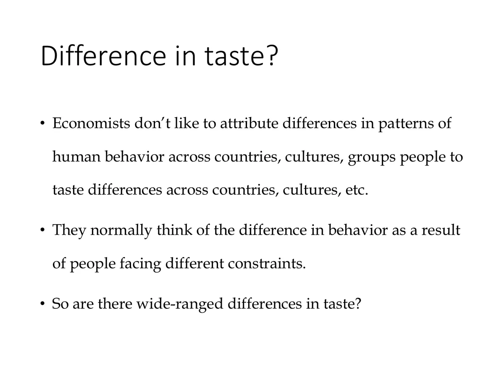
经济学家的默认立场：不喜欢用「口味不同」解释行为差异。
原因很简单——「口味不同」是一个不可检验的解释。看到差异就说口味不同，等于什么都没说。标准做法是：先假定口味相同，看约束（价格、收入、家庭规模、气候）能不能解释差异；解释不了，才承认口味可能不同。
这一页的提问「So are there wide-ranged differences in taste?」，是本节要动手检验的东西。
幻灯片原文 / 板书
Difference in taste? --- Economists don’t like to attribute differences in patterns of human behavior across countries, cultures, groups people to taste differences across countries, cultures, etc. They normally think of the difference in behavior as a result of people facing different constraints. So are there wide-ranged differences in taste?
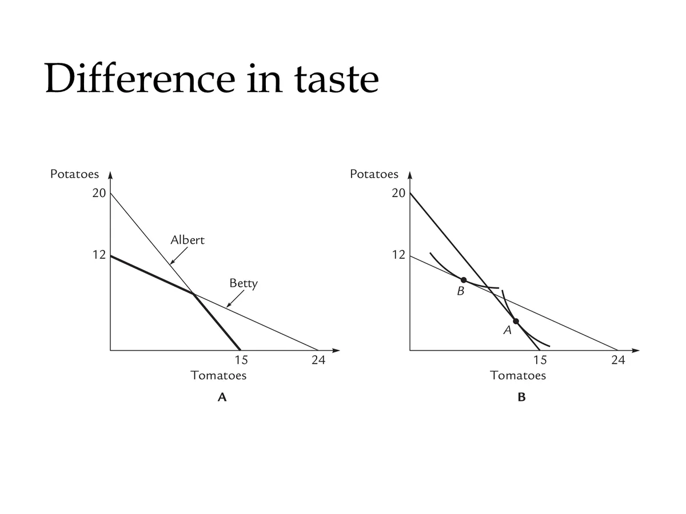
两位消费者，两种商品（番茄、土豆）。
- Albert：番茄 4 元、土豆 3 元，收入 60 元。
- Betty：番茄 2 元、土豆 4 元，收入 48 元。
观察到的选择：Albert 买 (12, 4)（12 个番茄、4 个土豆），Betty 买 (4, 10)。
先验算可行性：Albert 花 4×12 + 3×4 = 60，正好；Betty 花 2×4 + 4×10 = 48，正好。两人都把收入花光了，符合前面的模型。
但注意两人的相对价格不同：Albert 那里番茄贵（4 对 3），Betty 那里土豆贵（4 对 2）。所以他们的选择方向相反，可能只是因为面对的价格不同，不能直接说「口味不同」。要检验口味，必须先把价格统一。
幻灯片原文 / 板书
Difference in taste
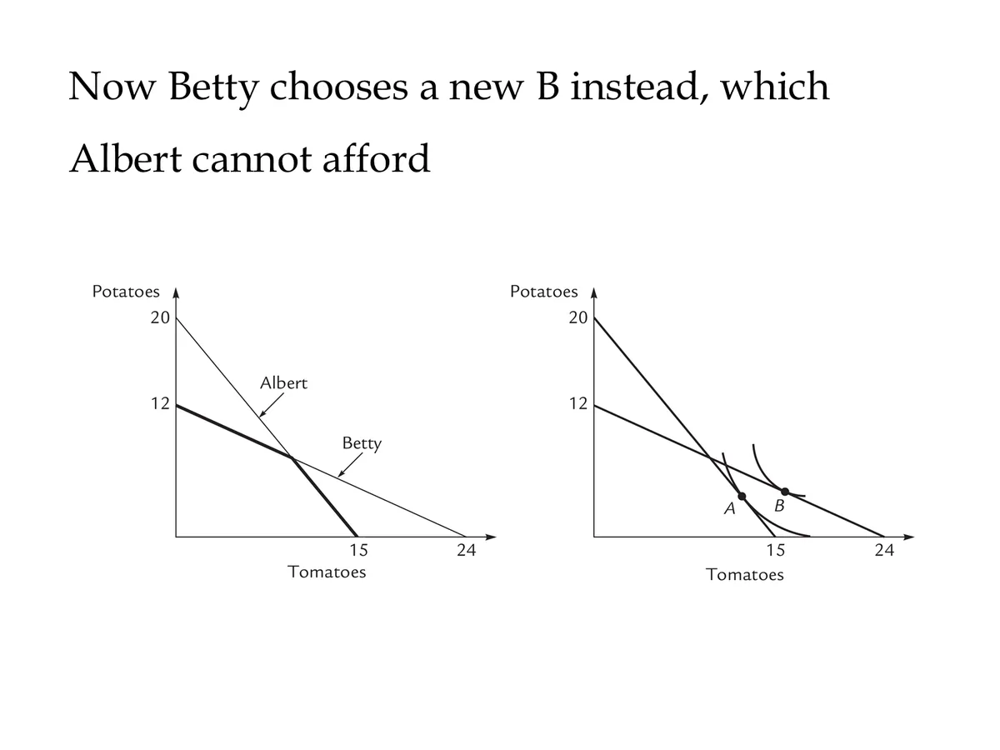
关键的一步，也是这个检验的巧妙之处：
- Betty 选的 (4, 10)，在 Albert 的价格和收入下只要 4×4 + 3×10 = 46，Albert 完全买得起——但他没选。
- 反过来，Albert 选的 (12, 4)，在 Betty 的价格和收入下只要 2×12 + 4×4 = 40，Betty 也买得起——但她没选。
也就是说：每个人都拒绝了一个自己买得起的篮子，而去选另一个。这个「拒绝」就是信息的来源。
经济学把这叫显示性偏好（revealed preference）：不需要问人「你更喜欢哪个」，看他选了什么就够了。这一招的价值在于——问卷调查里人会说谎，掏钱的时候不会。
幻灯片原文 / 板书
Now Betty chooses a new B instead, which Albert cannot afford
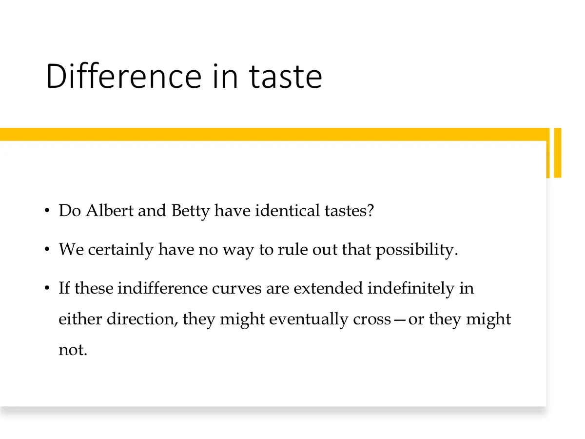
把这两个「拒绝」翻译成图形语言：
- Albert 选 A 不选 B ⇒ 在 A 点，他的无差异曲线高于经过 B 的那条。
- Betty 选 B 不选 A ⇒ 在 B 点，她的曲线高于经过 A 的那条。
两个不等式方向相反，唯一可能是：两人的无差异曲线相交。而同一人的无差异曲线绝不能相交（传递性），所以相交只能意味着——他们不是同一个人，口味不同。
这一页的措辞很谨慎：「我们当然无法排除口味相同的可能性」——如果曲线继续延伸，也许永不相交。所以「相交」是证据，不是证明。
幻灯片原文 / 板书
Difference in taste --- Do Albert and Betty have identical tastes? We certainly have no way to rule out that possibility. If these indifference curves are extended indefinitely in either direction, they might eventually cross—or they might not.
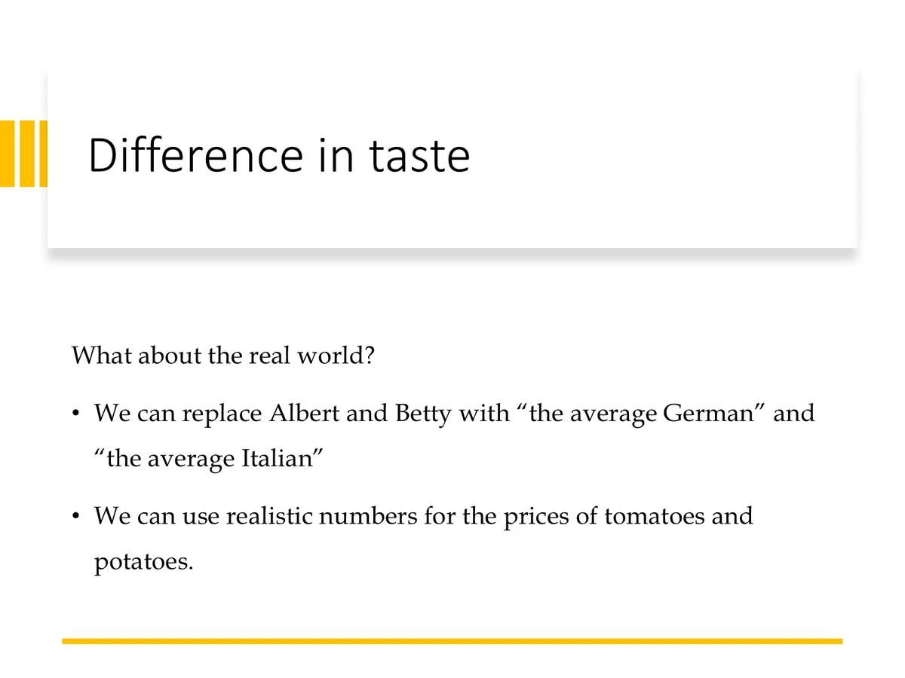
把玩具例子换成现实：
- 把 Albert 换成「平均德国人」，Betty 换成「平均意大利人」。
- 把番茄、土豆换成这两国真实的、有统计的价格。
- 把「收入」换成真实的人均支出。
方法完全不变：用一国的价格和收入去检验另一国选的篮子买不买得起。如果买得起却被拒绝，就抓到了一个「口味不同」的证据。
数据从哪来？各国的家庭消费调查（household expenditure survey）：抽几万户，记录收入和各商品大类的支出。Houthakker 用的就是这类数据，按收入分组、按家庭规模分组，看支出结构怎么随这两件事变。
幻灯片原文 / 板书
Difference in taste --- What about the real world? We can replace Albert and Betty with “the average German” and “the average Italian” We can use realistic numbers for the prices of tomatoes and potatoes.
把这个检验做成批量版：德国 vs 希腊、希腊 vs 意大利、波兰 vs 匈牙利……商品也可以从两种扩展到多种（多维情形下图形画不出来，但代数检验照做）。
判定规则只有一条：只要出现「A 买得起 B 的篮子却不选、B 买得起 A 的篮子却不选」的组合，就说明无差异曲线相交，也就说明口味不同。如果所有配对都通不过这个检验，那口味相同的假设就还活着。
幻灯片原文 / 板书
Difference in taste --- Then we can repeat the exercise with Germans and Greeks, or Greeks and Italians, or Poles and Hungarians, and with more than just two goods. If we ever get a picture like the first one, we’ve spotted a taste difference.
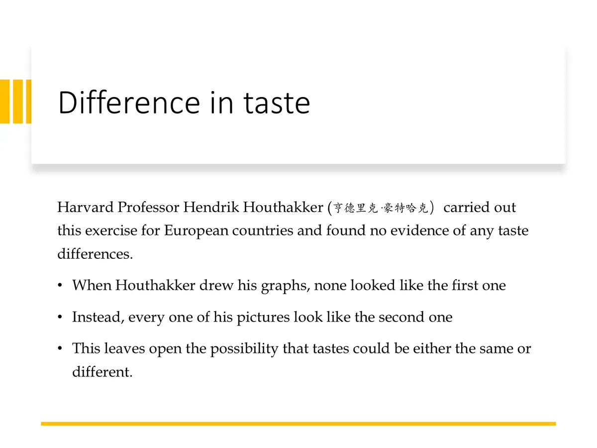
有人真的做过这件事：哈佛教授 Hendrik Houthakker（亨德里克·豪特哈克）对欧洲各国做了这套比较。
结果：没有发现任何口味差异的证据——他画的图没有一张出现「相交」的形状，全部长得像「不相交」的那一种。
结论要说得精确：这不能证明各国口味相同，只能说明「数据无法拒绝口味相同」这个假设。口味可以相同，也可以不同，现有证据分不出来。这也是计量经济学里「不能拒绝原假设 ≠ 证明原假设」的早期范例。
幻灯片原文 / 板书
Difference in taste --- Harvard Professor Hendrik Houthakker (亨德里克·豪特哈克）carried out this exercise for European countries and found no evidence of any taste differences. When Houthakker drew his graphs, none looked like the first one Instead, every one of his pictures look like the second one This leaves open the possibility that tastes could be either the same or different.
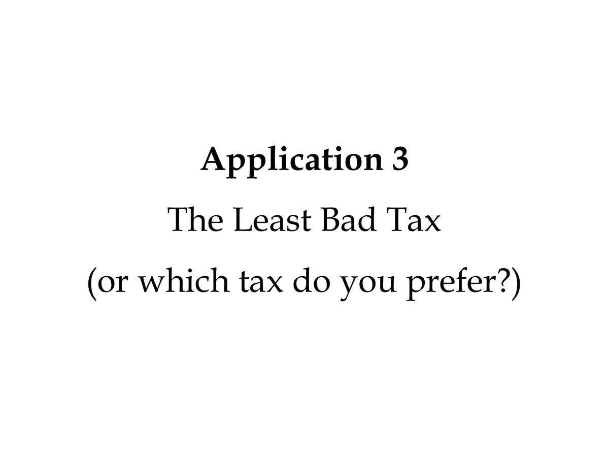
应用三：最不坏的税（the least bad tax）——或者换个问法：你更愿意交哪种税？
这一节把消费者选择框架用到税制设计上，结论会有点反直觉：同样收你 100 块，不同的税给你的伤害不一样。这是「税收的超额负担」这个概念最早、也最干净的入门。
幻灯片原文 / 板书
Application 3 The Least Bad Tax (or which tax do you prefer?)
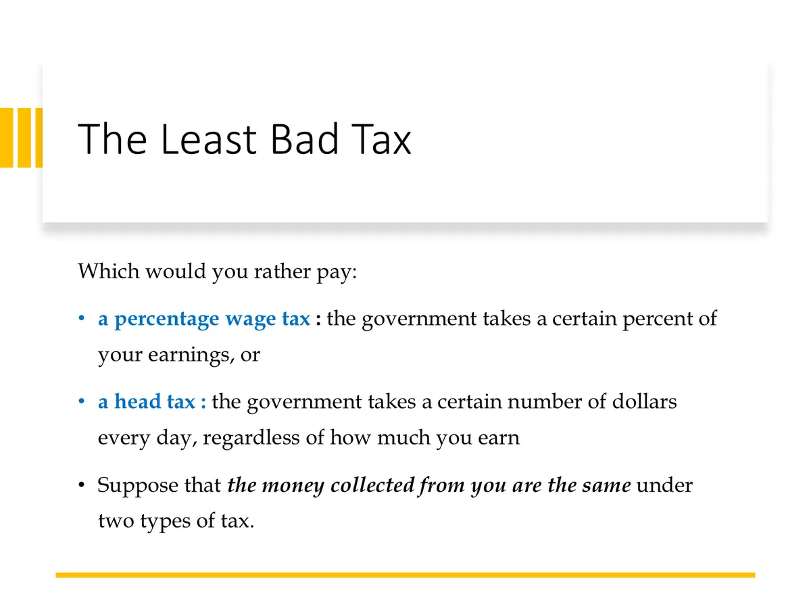
两种税，二选一：
- 工资税（wage tax）：政府按你收入的百分比抽成。
- 人头税（head tax）：政府每天收你固定金额，不管你赚多少。
前提条件：两种税从你身上收走的钱一样多。
直觉上很多人会说「一样多就一样」，或者「人头税更狠，因为穷人也要交」。先别急，把数字代进去算。
先把两个术语钉住：工资税是按比例征的，工资涨收入也涨，税也跟着涨，属于「边际税率」；人头税是一次总付（lump-sum）的，不管挣多少都交同一个数，边际税率是零。这个区别是整节的钥匙。
幻灯片原文 / 板书
The Least Bad Tax --- Which would you rather pay: a percentage wage tax : the government takes a certain percent of your earnings, or a head tax : the government takes a certain number of dollars every day, regardless of how much you earn Suppose that the money collected from you are the same under two types of tax.
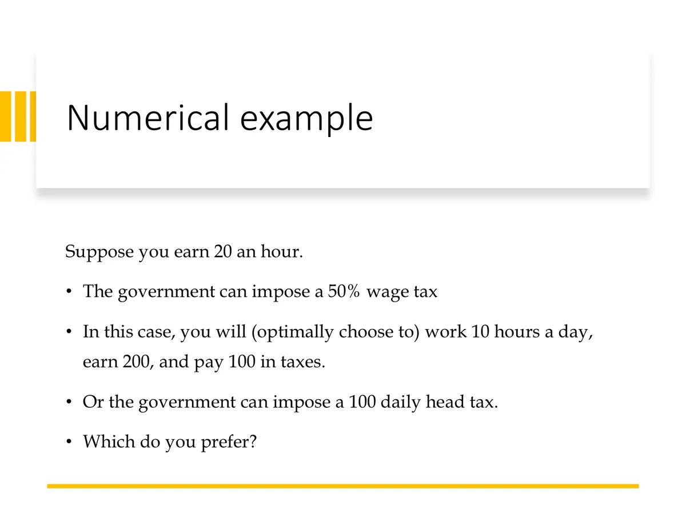
数值例子：
- 你每小时赚 20 美元。
- 方案一：50% 的工资税。在这种情况下，你会（最优地）每天工作 10 小时，赚 200，缴税 100，到手 100。
- 方案二：每天 100 的固定人头税。
两种方案政府都拿到 100。你更愿意要哪个？
注意「最优地」三个字：10 小时不是随便定的，是你在税后工资 10 美元/小时的条件下重新优化出来的结果。
数字别混：200 是毛收入（干活挣到的），100 是净收入（交完税拿回家的），中间那 100 是税。考试里最常见的错，是把毛收入当成可支配收入去算效用。
幻灯片原文 / 板书
Numerical example --- Suppose you earn 20 an hour. The government can impose a 50% wage tax In this case, you will (optimally choose to) work 10 hours a day, earn 200, and pay 100 in taxes. Or the government can impose a 100 daily head tax. Which do you prefer?
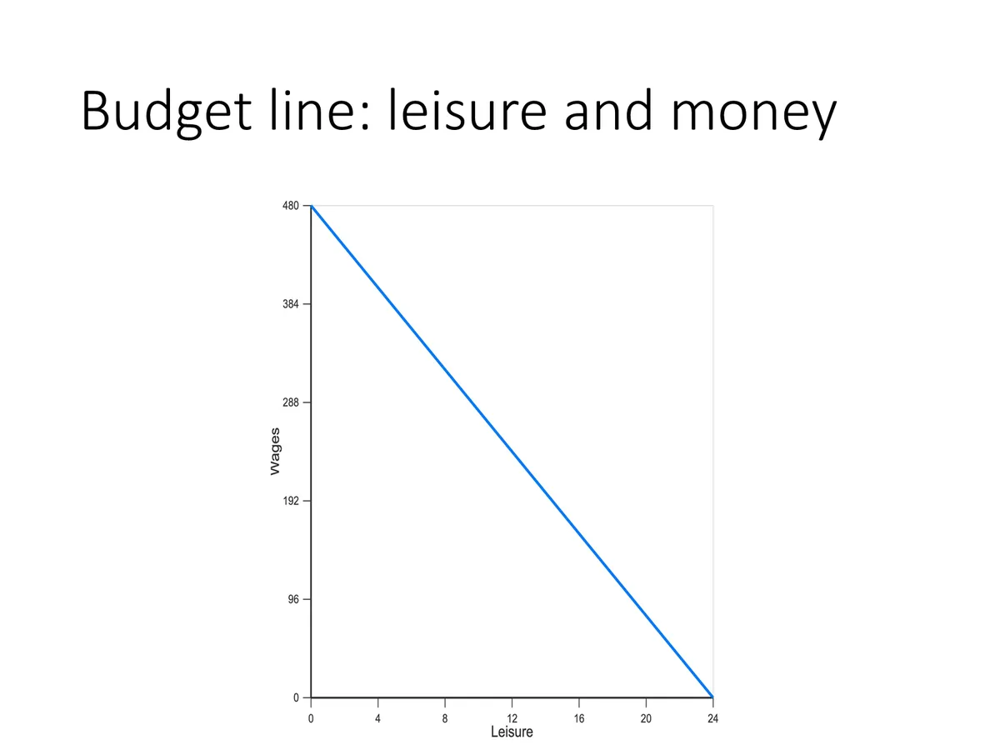
过渡页：把这个问题画成一张图——闲暇与收入的预算线（budget line: leisure and money）。
这是全讲第二次用「复合商品」技巧：纵轴的钱，就是「其他所有商品」；横轴的闲暇，是你不工作的时间。工作与不工作之间的取舍，就此变成一个标准的消费者选择问题。
幻灯片原文 / 板书
Budget line: leisure and money
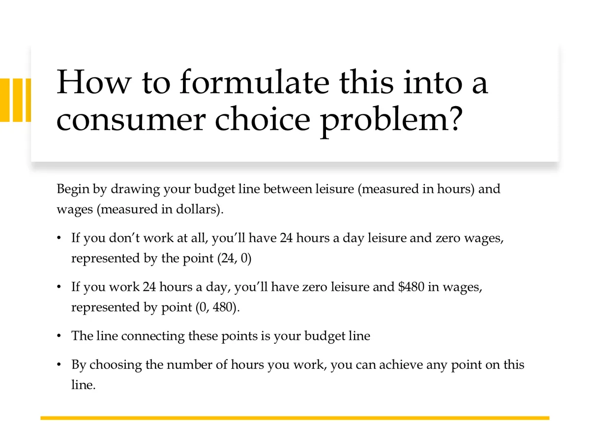
怎么把这个问题写成消费者选择？
横轴闲暇（小时），纵轴工资收入（美元）。一天 24 小时，所以：
- 完全不工作：闲暇 24 小时，收入 0 → 点 (24, 0)。
- 工作 24 小时：闲暇 0，收入 24 × 20 = 480 → 点 (0, 480)。
连接这两点的直线就是预算线，斜率 = -20，正好是负的工资率。选工作几个小时，等于在这条线上选一个点：往左上走是多闲暇少收入，往右下走是多收入少闲暇。
一个模型简化的提醒：纵轴标的是「收入」而不是「消费」，等于假设钱全部花掉、没有储蓄。这个假设在本讲够用，但讨论遗产、养老时就不够用了。
幻灯片原文 / 板书
How to formulate this into a consumer choice problem? --- Begin by drawing your budget line between leisure (measured in hours) and wages (measured in dollars). If you don’t work at all, you’ll have 24 hours a day leisure and zero wages, represented by the point (24, 0) If you work 24 hours a day, you’ll have zero leisure and $480 in wages, represented by point (0, 480). The line connecting these points is your budget line By choosing the number of hours you work, you can achieve any point on this line.
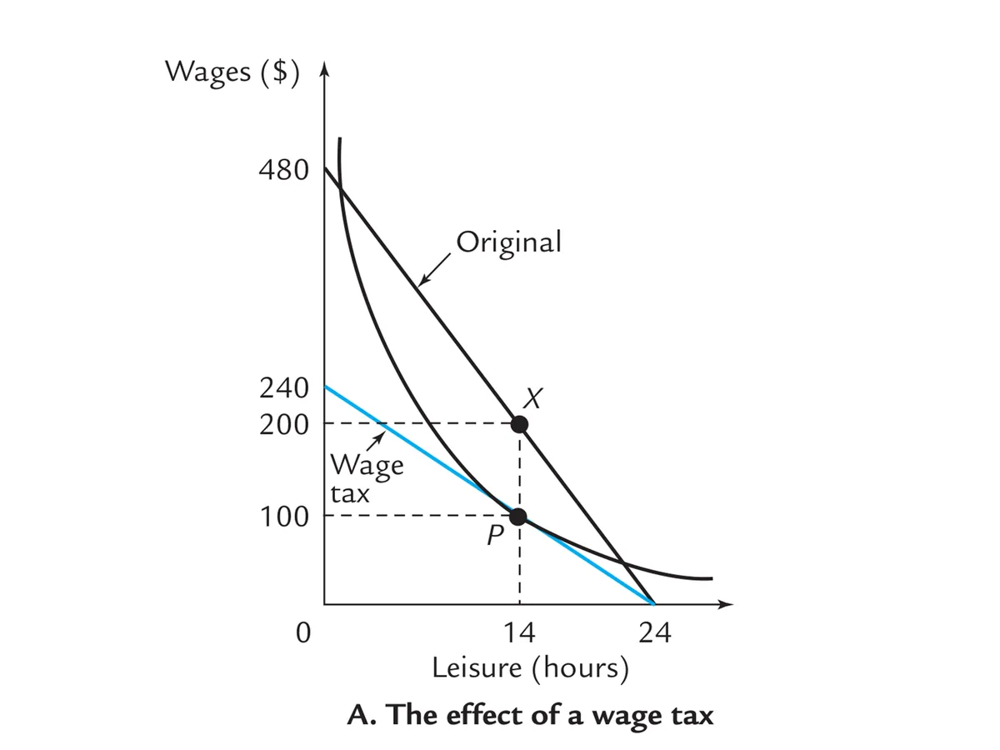
图 A：只有工资税的情形。
- 原预算线：(24, 0) 到 (0, 480)，斜率 -20。
- 工资税后：税后工资 10，线绕 (24, 0) 旋转，纵轴截距从 480 掉到 240，斜率变成 -10。
- 原最优点 X = (14, 200)：闲暇 14 小时，工作 10 小时，赚 200。
- 税后最优点 P = (14, 100)：同样工作 10 小时，毛收入还是 200，但净到手 100。
注意 P 比 X 低——同一个工作时长，收入少了一半。P 落在更低的无差异曲线上，这是工资税的直接代价。
盯住这条线是怎么动起来的：它绕 (24, 0) 点旋转，从截距 480 转到 240。旋转意味着斜率变了，也就是「多工作一小时能换多少钱」变了。价格不变时预算线是平移的，价格变时才旋转——旋转就是扭曲的图形标志。
现在看人头税。政府仍然收 100。
先做一件「笨」事：假设你还是工作 10 小时。那么毛收入 200，缴 100，净得 100——和工资税下完全一样，落在同一个 P 点。
课件在这里加了一句很重要的提醒：这未必是你在人头税下的最优选择，因为价格变了（多工作一小时的报酬回到了 20）而你还没重新优化。正因如此，「仍然工作 10 小时」给你的福利只是一个下界——你实际能达到的，只会比这更好。
幻灯片原文 / 板书
Head tax --- Now consider a head tax The amount collected is still 100 Suppose you still worked for 10 hours (notice that this might NOT be optimal for you now, because price changed but you do not reoptimize. In other word, still working for 10 Hours is a lower bound for your welfare under the head tax)
图 B：把两种税画在一起。
- 人头税线：原线平行下移 100。纵轴截距 480 - 100 = 380，斜率仍是 -20（因为人头税不改变任何边际价格），横轴交点移到闲暇 19 小时（20 × (24-19) = 100，刚好够交税）。
- 这条线也穿过 P 点（闲暇 14、净收入 100）——这就验证了上一页「同样工作 10 小时，两种税到手一样」。
- 但它比工资税线更陡。在 P 的左边（闲暇更少），人头税线更高。
于是新的最优点 Q 出现在 P 的左上方：闲暇更少、收入更高、无差异曲线更高。
结论：同样交 100 块，人头税让你过得更好。
这个结果确实让人意外：两种税收的钱一模一样，一种却比另一种好。
为什么？课件把问题拆成「直觉」和「边际分析」两步。这里先给一句话版本：税收到手是同样的，但税改变了你面对的边际价格，而边际价格会扭曲你的选择。工资税把你的工资从 20 压到 10，你于是少工作；人头税一分钱也不改你的工资率，你只是「变穷了一点」。
幻灯片原文 / 板书
Intuition --- You might be surprised to learn that one tax can be preferable to another, even when they both collect the same amount of revenue. What’s the intuition behind this result?
边际分析第一步：先站在工资税的世界里。
此时你的税后工资是 10 美元/小时，你选了 P 点。在 P 点有一个关键性质：
你对闲暇的边际价值恰好等于 10 美元/小时。
这句话的意思是：在 P 点，多给你一小时闲暇，你愿意付的最高价格正好是 10 块；反过来，让你放弃一小时闲暇去工作，你要的补偿也正好是 10 块。你在边际上无差异，所以停下来——这就是最优。
幻灯片原文 / 板书
Intuition: marginal analysis --- Suppose first that you’re subject to the wage tax, so that your after-tax income is 10 per hour. Then, you choose point P At this point, the marginal value of your leisure is exactly equal to your 10-per-hour wage rate.
第二步：突然把工资税换成人头税。
现在多工作一小时的报酬从 10 变回 20。而你的闲暇仍然只值 10。
于是：工作一小时，赚 20；代价是失去价值 10 的闲暇。净赚 10。你当然愿意多工作——而且你会一直调整到新的边际相等（在 Q 点，闲暇的边际价值升到 20）。
关键点：这个「多出来的机会」本身就是福利。你至少还能选 P（因为人头税线下 P 依然可行），但现在你有更好的点可去。所以人头税严格优于工资税。
幻灯片原文 / 板书
Intuition: marginal analysis --- Now if the wage tax is suddenly abandoned and replaced by a head tax, you have the opportunity to earn 20 for an additional hour of work. Because the marginal value of your leisure is only $10 per hour, you’ll welcome this opportunity and consider yourself better off.
一个极端例子，把直觉钉死：
你更愿意交「0 元人头税」，还是「对鞋子征 5,000,000% 的销售税」？
两种税政府都收 0：人头税你交 0；鞋税呢，一双鞋变成 100 万一双，你干脆光脚，也交 0。
但显然应该选前者——零人头税下你还买得起鞋，鞋税下你被迫放弃鞋子。税收相同（都是 0），福利天差地别。
这就是「最不坏的税」这个标题的含义：在所有能收同样多钱的税里，一次总付税（lump-sum tax，如人头税）最好，因为它不改变任何边际价格，只让你变穷，不扭曲你的选择。现实中的所得税、增值税都做不到这一点，所以一定有超额负担。
幻灯片原文 / 板书
Intuition (2) --- An extreme example to build intuition: Which do you prefer, a 0% head tax or a 5,000,000% sales tax on shoes? In both case, government collect zero tax revenue, because you’ll surely choose to go barefoot if a pair of shoes cost 1,000,000RMB. Nevertheless, it’s better to pay the zero-dollar head tax and buy a pair of shoes under the zero head tax.
应用四：从无差异曲线推导需求曲线（deriving the demand curve from the indifference curve）。
这是全讲的收口。前面所有工具——偏好、预算线、相切——都是为了这一刻：把第二讲「凭空给出」的那条向下倾斜的曲线，推出来。
幻灯片原文 / 板书
Application 4 Deriving the demand curve from the indifference curve
这一页两张图，左边是消费者选择、右边是需求曲线。
左图：横轴鸡蛋，纵轴啤酒（啤酒价格固定，全部预算线的纵轴截距都停在 8 瓶）。收入 24 美元、啤酒 3 美元/瓶，所以纵轴截距 8。鸡蛋价格变化时，横轴截距跟着变：
| 鸡蛋价格 | 横轴截距（24/价格） | 切点 | 最优鸡蛋量 |
|---|---|---|---|
| 6 美元 | 4 个 | C | 2 个 |
| 3 美元 | 8 个 | B | 3 个 |
| 2 美元 | 12 个 | A | 5 个 |
把三个切点 C → B → A 连起来，这条线叫价格消费曲线（price-consumption curve，PCC）：它记录「只有一种价格在变」时，最优点移动的轨迹。
右图：把左图里每一组「价格, 数量」重新描点——(2, 6)、(3, 3)、(5, 2)——连起来就是需求曲线。
幻灯片原文 / 板书
From consumer choice to demand curve
这张图引出的概念链，后面会反复用：
- 价格消费曲线（PCC）：价格变化时最优点的轨迹，画在「商品数量」平面上。
- 个人需求曲线：把 PCC 上的点「翻译」到「价格—数量」平面上。
- 支付意愿（willingness to pay）：需求曲线的高度，就是买者为那一单位愿意出的最高价。
- 消费者剩余：支付意愿与实际支付之差。
一句话记：需求曲线就是这个人的边际支付意愿曲线——它不是假设出来的，是从偏好和预算里长出来的。
幻灯片原文 / 板书
Important concepts related to consumer demand
消费者剩余（consumer surplus）：你愿意为某单位商品付的最高价，减去你实际付出的价格；把所有单位加起来，就是总剩余。
几何上：需求曲线以上、市场价格线以下、直到购买量为止的那块面积。
它是衡量福利的标准工具。后面分析关税、垄断、价格管制时，判断「好还是坏」主要就是看消费者剩余加生产者剩余怎么变。
一个容易被忽略的细节：消费者剩余只算买方的好处，卖方的好处叫生产者剩余。只看 CS 会得出「涨价一定坏」的结论，看总剩余才知道社会净损失是多少。
幻灯片原文 / 板书
Consumer surplus
一个算例，横轴数量（百万单位）、纵轴价格。
需求曲线从纵轴 125 出发，向下倾斜。市场价格 P = 75 时，需求量 Q = 40（百万）。
- 消费者剩余 = 上面那个三角形 = ½ × 40 × (125 - 75) = 1000（百万美元，即 10 亿）。
- 若价格从 50 涨到 75：先失去长方形 25 × 40 = 1000，再失去三角形 ½ × 20 × 25 = 250，合计损失 1250。
图上橙色那块标着「Lost Consumer Surplus」，就是这 1250。注意它由两部分组成：还在买的人多付的钱（长方形），以及被挤出去的 20 个单位原本的剩余（三角形）。
进入本讲最后一大块：需求弹性（demand elasticity）。
上一讲学过需求定律：价格上升，需求量下降。但它只告诉你方向，不告诉你幅度——涨 10% 到底少买 1% 还是少买 30%？
这个问题决定了太多事情：涨价能不能增加收入、税收由谁承担、技术进步会不会让整个行业萎缩。要精确回答，需要弹性。
先感受一下差别的量级：地铁票价涨 1 元，客流可能只掉 0.5%；出租车起步价涨 1 元，乘客可能少 8%。同样是「涨 1 元」，一个几乎无关痛痒，一个伤筋动骨。差的就是弹性。
幻灯片原文 / 板书
Demand elasticity --- We have already learned the law of demand last time. Suppose we want more precise answers as to exactly how responsive quantity demanded is to a change in price. Widely used by economics: elasticity.
弹性（elasticity）的定义：一个经济变量对另一个变量变化的敏感度。
更精确地说：
弹性 = 变量的百分比变化之比。
注意是百分比，不是绝对值。这个选择不是随便的——它让弹性变成无量纲的数，于是「鸡蛋涨价 10% 少买 15%」和「房子涨价 10% 少买 2%」可以直接比大小。
公式写全：ε_D = (ΔQ/Q) / (ΔP/P)。注意分母永远是引起变化的那个变量——价格弹性里是价格，收入弹性里是收入。分母选错，整道题就翻了。
幻灯片原文 / 板书
Elasticity --- Elasticity measures the sensitivity of one economic variable to a change in another. It tells us how much one variable changes when another changes. More precisely, elasticity is a ratio of percentage changes in variables.
最容易错的一点：弹性不等于斜率。
- 斜率 = ΔQ / ΔP，有单位（比如「个/元」），换一个计量单位（把「打」换成「个」）数值就变了。
- 弹性 = (%ΔQ) / (%ΔP)，没有单位，换计量单位不变。
所以弹性「比斜率深一层」：它同时包含了变动的方向和幅度相对于基准的大小。一条直线（斜率恒定）上，不同点的弹性可以完全不同——这一点第 76 页的图会再提醒一次。
具体说两种「斜率一样、弹性不一样」的情形：一是两条平行需求线（斜率相同），位置越靠上（价格越高）弹性越大；二是同一条直线上，左上段的价格高、基数小，弹性大，右下段弹性小。所以「这条线陡，所以弹性小」是一句不能单独成立的话。
幻灯片原文 / 板书
Elasticity --- Note that elasticity is NOT the same as the slope of a line. By measuring changes in percentage terms, elasticity goes a step deeper than the slope relationship. Elasticity is an important concept because it takes into account not only the direction of change but also the size of the change.
弹性有很多种，本讲聚焦与需求曲线相关的三种：
- 需求的价格弹性（price elasticity of demand）：数量对自己价格的反应。
- 需求的交叉价格弹性（cross-price elasticity）：数量对另一种商品价格的反应。
- 需求的收入弹性（income elasticity）：数量对收入的反应。
三种共用同一个计算逻辑（百分比之比），只是分子分母换了变量。学会一个，另外两个是免费的。
但符号要分清：价格弹性通常为负（涨价少买），取绝对值后比较；收入弹性为正是正常品、为负是劣等品；交叉弹性为正是替代品、为负是互补品。同一套算法，符号承载了全部经济学含义。
幻灯片原文 / 板书
Elasticity --- Elasticities come in many forms, but in this chapter we focus on the most important ones associated with demand curves. 1. The price elasticity of demand 2. The cross-price elasticity of demand 3. The income elasticity of demand
价格弹性的公式：
ε_D = 需求量百分比变化 / 价格百分比变化
课件说这个计算有两个地方要当心，接下来两页分别讲：一个是符号，一个是和 1 比大小。
补一句计算细节：百分比变化要除以基期值，%ΔQ = ΔQ/Q、%ΔP = ΔP/P，所以 ε_D = (ΔQ/Q) / (ΔP/P)。若价格变动幅度较大，实务中常用中点公式（用两点平均值为分母），避免「涨价和降价算出的弹性不一样」。
数字例子：价格从 10 涨到 11，%ΔP = +10%；需求从 100 掉到 90，%ΔQ = -10%；于是 ε_D = -10%/10% = -1，单位弹性。如果反过来从 11 降回 10，用同一套算法会得到 -1.1——这就是为什么要用中点公式。
幻灯片原文 / 板书
The price elasticity of demand --- Two features of this computation are important.
第一个要点：符号。
由需求定律，价格上升数量下降，所以价格弹性一般为负。
负号在报告时很麻烦（「弹性是 -1.5」听起来像坏消息），所以惯例是取绝对值，直接说「弹性 1.5」。
读法：绝对值越大，消费者对价格越敏感。弹性 3 意味着价格涨 1%，需求掉 3%；弹性 0.2 意味着价格涨 1%，需求只掉 0.2%。
为什么统一取绝对值？因为几乎所有需求曲线都向下，弹性几乎都是负数。留着负号，比大小时每次都要想「-3 和 -0.2 谁更敏感」，极易出错。约定俗成：说「弹性大」指绝对值大，说「弹性 1」指绝对值等于 1。
幻灯片原文 / 板书
The price elasticity of demand --- First, because of the Law of Demand, the price elasticity of demand will generally be negative. The negative sign is inconvenient, so we often drop the minus sign when reporting (so we are using the absolute value) Note that higher price elasticities mean that consumers are more responsive to a change in price.
第二个要点：和 1 比大小。
| 弹性（绝对值） | 名称 | 含义 |
|---|---|---|
| > 1 | 富有弹性（elastic） | 数量反应强于价格变化 |
| < 1 | 缺乏弹性（inelastic） | 数量反应弱于价格变化 |
| = 1 | 单位弹性（unit elastic） | 数量与价格同比例变化 |
为什么偏偏拿 1 当分界线？因为 1 是总收入不变的那条线：弹性大于 1 时降价能增加收入，小于 1 时涨价能增加收入。这条对企业定价极其有用，后面还会用到。
幻灯片原文 / 板书
The price elasticity of demand --- Second, whether the price elasticity of demand greater than or less than 1 Greater than one: call it elastic Less than one: call it inelastic Equal to one: unit elasticity
两个极端情形：
- 完全弹性（perfectly elastic）：弹性无穷大。需求曲线是水平线——价格只要涨一点点，消费者就完全停止购买。含义：这个市场里你的商品和别人完全一样，你没有任何定价权（接近完全竞争）。
- 完全无弹性（perfectly inelastic）：数量完全不受价格影响。需求曲线是垂直线。典型是救命药、成瘾品——价格翻倍，该买还得买。
现实中的商品都落在这两个极端之间，极端情形是「思维实验」，用来标定两端。
幻灯片原文 / 板书
The price elasticity of demand --- Extreme case: perfectly elastic and perfectly inelastic Elasticity is infinite: demand is highly responsive to price changes: the smallest increase in price causes consumers to stop consuming the good altogether. Demand can also be perfectly inelastic, which means that quantity demanded is completely unaffected by price.
三幅图放在一起，横轴数量、纵轴价格：
- (a) 水平线，价格恒为 3：完全弹性。
- (b) 向下倾斜的曲线：价格从 3 降到 2（跌 33%），数量从 2 升到 3（升 50%），弹性约 1.5，富有弹性。
- (c) 垂直线，数量恒为 5：完全无弹性。
读 (b) 时留意一件事：两个点的总收入都是 3×2 = 6 和 2×3 = 6，没变。这提示我们：沿一条需求曲线移动，弹性是逐点变化的——同一个「跌 33% 涨 50%」用不同的基期算，结果不同。所以真实计算要用中点公式。
幻灯片原文 / 板书
Graphic illustration
Deepseek 与 Nvidia 的例子，把弹性用到产业分析上。
设定：
- AI 公司训练大模型需要 n 块 Nvidia 芯片。
- Nvidia 每块芯片卖 V（假定不变）。
- LLM 市场竞争激烈、利润接近零，所以一个模型的价格 p = nV——芯片成本全部转嫁给用户。
- 模型的市场需求 q = q(p)。
- Nvidia 的收入 R = (nV) × q(p) = nV × q(nV)。
注意这个式子的结构：Nvidia 的收入 = 「每个模型的芯片成本」×「卖出的模型数」。两个因子都受 n 影响，方向相反。
这里藏着一个容易跳过去的假设：Nvidia 是唯一的供给者，芯片单价 V 不随 n 变。所以它要回答的不是「定什么价」，而是「销量被侵蚀多少会吃掉提价的收益」——这正是弹性问题。
幻灯片原文 / 板书
Deepseek and Nvidia --- AI companies need Nvidia chips to train their LLM. To train one model, chip requirement is n Nvidia’s price per chip is V (suppose this does not change) Suppose LLM companies are under fierce competition: near-zero profits, price for one model is p=nV The market demand for models: q=q(p) Nvidia’s revenue: R=(nV)*q(p)=nV*q(nV)
设 m = nV，即「训练一个模型的芯片成本」。则
R = m × q(m)
现在 Deepseek 找到办法用更少的芯片训练（n 下降），并且开源，于是全世界的 n 都下降 → m 下降 → 模型价格 p 下降 → 模型需求 q 上升。
Nvidia 的收入是升是降？ 取决于 LLM 市场需求的弹性：
- 弹性 > 1（富有弹性）：价格降一点，需求涨很多，m×q 变大 → Nvidia 赚更多。
- 弹性 < 1（缺乏弹性）：价格降了，需求涨得少，m×q 变小 → Nvidia 赚更少。
这就是「卖铲子的人」在技术革命中的命运，完全由下游的需求弹性决定。
幻灯片原文 / 板书
Deepseek and Nvidia --- Let m=nV. Nvidia’s revenue: R=(nV)*q(p)=nV*q(nV)= m*q(m) Now, Deepseek find a way to train LLM with a lower n Open-source: n all the round the world decrease: m decreases Whether Nvidia will experience a decrease or increase in revenue depend on the elasticity of demand on the LLM market!
Jevons 悖论（杰文斯悖论）：
技术进步提高了某种资源的使用效率，这种资源的总需求反而上升，而不是下降。
经典例子是煤：蒸汽机效率提高，单个工厂用煤变少，但煤的总消耗量暴涨。
课件说得很直白：从基础微观经济学看，这根本不是悖论。机制就是上一页：效率提高 = 单位使用成本下降 = 沿需求曲线向右下移动；只要需求富有弹性，总用量（和总支出）就会增加。所谓「悖论」，只是把「单位用量」和「总用量」搞混了。
幻灯片原文 / 板书
Jevons' Paradox? --- Jevons‘ Paradox: As technological improvements increase the efficiency of resource, the overall demand for that resource can actually increase rather than decrease. From basic microeconomics the Jevon’s Paradox is no paradox at all.
标题页：沿需求曲线上下移动（moving up and down the demand curve）。
这一页是个提醒，区分两件常被混淆的事：
- 沿曲线移动（movement along）：只有该商品自己的价格变化，引起「需求量」变化。
- 整条曲线平移（shift）：收入、偏好、替代品价格、预期等变化，引起「需求」变化。
弹性的计算只用第一种。如果曲线本身移动了，你算出来的不是弹性，是别的什么东西。
用图形语言说：弹性是「同一条曲线上两个点之间的相对变化」，所以它的数值依赖于你选哪两个点；曲线平移是「换一条曲线」，那属于需求的决定因素变了，不属于需求量的反应。做题时先问一句：这条线动没动？
幻灯片原文 / 板书
Moving Up and Down the Demand Curve
弹性的决定因素之一：替代品的接近程度（closeness of substitutes）。
课件的例子：演员杨紫被选为一部新片的女主角，开拍前突然要求大幅提高片酬，制片人会怎么办？
答案是：换人。因为「能演这个角色的女演员」不只有她一个，替代品很近，所以她的「需求」富有弹性——要价太高，制片方立刻转向别人。
反过来的推论：替代品越少，弹性越小。这解释了为什么独家专利药可以定天价。
幻灯片原文 / 板书
Determinants of demand elasticities --- 1. Closeness of substitutes. Say the actress Yang Zi was chosen as the leading actress in a new movie. However, she suddenly asks a much higher remuneration How would the producer act?
一页娱乐新闻截图：「傻傻分不清，看撞脸明星造型，你能分出她们吗？」
内容是若干对外貌和名字都极为相似的明星，配上「在娱乐圈总有那么几个名字让你熟悉，却分不清她们到底是哪张脸」的解说。
老师放这一页当然不是为了八卦，而是做一个视觉类比：两个人长得越像，就越容易被互相替代；商品也一样。「像不像」就是「替代性强不强」的通俗版本。
幻灯片原文 / 板书
Who is Who? --- 傻傻分不清,看撞脸明星造型，你能分出她们吗？ 在娱乐圈总有那么几个名字让你熟悉，却分不清她们到底是哪张脸。不但外貌相似就连名字也很像！下面就看看以下哪位明星让你傻傻分不清吧！
继续「Who is Who?」的游戏：屏幕上一组对照图，让你分辨哪张脸是谁。
到这里你应该已经体会到了那种「分不清」的感觉——而这正是消费者面对两个几乎相同的商品时的感觉。分不清，就意味着谁便宜买谁，也就是高弹性。
幻灯片原文 / 板书
Who is Who?
再来一组「Who is Who?」。难度加大，两张脸更接近。
教学意图和前两页一致：相似度越高，替代越容易，弹性越大。等这一组图看完，下一页给出经济学的结论句。
顺便说一句为什么用明星照片：这些图没有任何经济学内容，它的作用是把一个抽象命题变成你能「感觉到」的东西。等你下次看到两个几乎一样的产品打价格战，会想起这种脸盲感。
幻灯片原文 / 板书
Who is Who?
「撞脸网红大乱斗」：更多几乎一模一样的脸拼在一张图上。
这一页是这组玩笑的高潮，也是转折点——下一张就给出经济学上的正命题：低弹性意味着「只此一家」。
幻灯片原文 / 板书
撞脸网红大乱斗…
结论页：低价格弹性 = 只此一家（only one of its kind）。
图上并排放着两张几乎一模一样的脸（一位演员和他的「撞脸」者），标题写着「低价格弹性：只此一家」。
读法：如果你的商品没有近似替代品，顾客没有别处可去，你涨价他也得买——需求缺乏弹性。反之，如果满大街都是「撞脸」的替代品，你涨价顾客立刻走人——需求富有弹性。
这一条是所有弹性决定因素里最重要的一条，考试若只让写一个，就写它。
幻灯片原文 / 板书
Low price elasticity of demand: only one of its kind
因素之二：该商品的预算占比（budget share）。
逻辑：预算占比反映这个商品在你消费篮子里有多「重要」。
- 占比小（牙签、食盐、火柴）：涨价一倍你也不太在意，懒得调整 → 弹性小。
- 占比大（房子、家具、汽车）：涨价 10% 就是一大笔钱，你会认真比价、推迟购买、找替代 → 弹性大。
规律：随着预算占比上升，价格弹性上升。这也解释了一个现象：同样的涨幅，房价让人跳脚，盐价没人讨论。
幻灯片原文 / 板书
Determinants of demand elasticities --- 2. Budget share spent on the good. The budget share relates to how important the good is in your consumption bundle. If It is just not important to your overall budget, perhaps you will not be sensitive to price changes, even large ones. As you spend more of your budget on a good, the price elasticity of demand should increase
因素之三：可用来调整的时间（available time to adjust）。
课件的例子：油价暴涨，所有人会立刻不开车吗？当然不会——车已经买了，家离公司还是那么远，短期内只能咬牙加油。所以短期弹性很小。
但如果高油价持续下去呢？你会换小排量车、搬家到地铁沿线、改骑电动车、甚至换工作。时间越长，可调整的余地越大，弹性越大。
规律：长期弹性 > 短期弹性。这也是为什么能源税的政策效果要等很多年才显现。
幻灯片原文 / 板书
Determinants of demand elasticities --- 3. Available time to adjust. When the price of oil jumps to a high level, would everyone immediately stop driving? Of course not. What happens when the price stay high for a longer time period?
交叉价格弹性（cross-price elasticity）：
ε_xy = x 的需求量百分比变化 / y 的价格百分比变化
它衡量的是两种商品之间的关系：y 涨价，x 的需求量会怎么变？
注意分子和分母是不同商品——这正是它和价格弹性的区别。符号（正还是负）比大小更重要，因为符号直接告诉你两种商品是什么关系。
还要注意它衡量的是什么：不是「需求曲线的斜率」，而是「一条曲线被另一商品的价格推着移动了多少」。x 的曲线本身没变陡也没变缓，是整个位置挪了——所以交叉弹性的图，画的是两条线，不是一条线上两个点。
幻灯片原文 / 板书
The Cross-Price Elasticity
若交叉价格弹性为负：两种商品是互补品（complements）。
机制：y 涨价 → y 买得少 → 和 y 一起用的 x 也买得少 → x 的需求曲线左移。
课件举的例子：MacBook 与 iPhone。它们共享生态系统（iCloud、隔空投送、耳机切换），一台涨价会拖累另一台的销量。
记忆法：负号 = 一起用（价格上去，同伴下去）。
大小同样要读：-0.1 只是弱互补（面涨价，醋少买一点点）；-2 就是强互补（打印机涨价，墨盒销量腰斩）。同号之内，绝对值是「绑得多紧」的刻度，这个数字在企业定价里极关键——打印机便宜卖、墨盒贵着卖，就是因为两者绑得紧。
幻灯片原文 / 板书
Complements v.s. Substitutes --- If a cross-price elasticity is negative, then we say the two goods are complements. The fall in the price of one leads to a right shift in the demand curve for another. Example: Macbook and iPhone
若交叉价格弹性为正：两种商品是替代品（substitutes）。
机制：y 涨价 → 人们转去买 x → x 的需求曲线右移。
课件的例子：iPhone 与华为手机。同一个价位段、同一类需求，一边涨价，另一边受益。
记忆法：正号 = 换着用。第 81 页讲「替代品越接近弹性越大」，交叉弹性正是「接近程度」的定量刻度：数值越大，替代越紧密。
它在现实里有一个硬用途：界定相关市场。反垄断案件里，判断两家企业是不是在同一个市场，看的不是产品像不像，而是交叉弹性大不大——如果 A 涨价 5%，消费者大量转向 B，那 B 就是这个市场里的竞争者。中国市场监管总局审查平台合并时用的就是这个逻辑。
幻灯片原文 / 板书
Complements v.s. Substitutes --- If a cross-price elasticity is positive, then we say the two goods are substitutes. Example: iPhone and Huawei Phone
收入弹性（income elasticity）：
ε_I = 需求量百分比变化 / 收入百分比变化
它问的问题和前面都不同：不是「价格变了会怎样」，而是「你变富了会怎样」。
这个弹性决定了一个国家的消费结构会随经济增长怎么变——收入涨 10%，哪些商品的销量涨得比 10% 快，哪些反而下降。
这里有个常设陷阱：三种弹性的分母各不相同。价格弹性分母是价格，收入弹性分母是收入，交叉弹性分母是另一种商品的价格。题目里给了收入变化，你却在算价格弹性，就会得出一个数学上没错、意义上全错的数。
幻灯片原文 / 板书
The Income Elasticity of Demand
一张实测的收入弹性表（课件原表）：
| 商品 | 收入弹性 |
|---|---|
| 出国度假（foreign vacation） | 2.10 |
| 国内度假（domestic vacation） | 1.70 |
| 度假房产（vacation home） | 1.20 |
| 医疗（healthcare） | 1.18 |
| 肉类（meats） | 1.15 |
| 住房（housing） | 1.00 |
| 果蔬（fruits and vegetables） | 0.61 |
| 汽油（gasoline） | 0.48 |
| 谷物（cereal） | 0.32 |
| 环境（environment） | 0.25 |
| 电力（electricity） | 0.23 |
| 大米（rice） | -0.44 |
| 公共交通（public transit） | -0.75 |
怎么读：大于 1 的是奢侈品（收入涨 10%，出国度假涨 21%）；0 到 1 之间的是必需品（汽油 0.48，收入涨 10% 只多买 4.8%）；恰好等于 1 的是分界线（住房 1.00，收入涨 10% 支出也涨 10%，占比不变）；小于 0 的是劣等品（大米 -0.44、公共交通 -0.75，收入上去反而少买）。
表里最值得盯的是 1.00 这条线：住房恰好等于 1，说明收入涨一成、住房支出也涨一成，占比不变。比它低的是必需品，比它高的是奢侈品；而收入越低、食品占比越高的规律，就是恩格尔定律（Engel's law）——这张表是它的现代版本。大米在中国是劣等品的说法听着奇怪，但对一个已经吃饱的家庭来说，收入上去确实会少吃米饭、多吃肉。
最后一页，把收入弹性变成商品分类：
- 正常品（normal goods）：收入上升，买得更多，收入弹性 > 0。
- 劣等品（inferior goods）：收入上升，买得更少，收入弹性 < 0。
两个容易错的地方：
- 「劣等」是统计意义上的，不是质量评价。大米对低收入家庭是主食，收入提高后改吃肉和外卖，大米消费下降——它就成了劣等品，但这不代表大米「不好」。
- 正常品内部还要再分：弹性 > 1 的叫奢侈品，0 < 弹性 < 1 的叫必需品。所以「正常」不是一个点，而是一整段。
到这里，第三讲闭环：从「你喜欢什么」出发，经过预算约束和相切条件，推出了需求曲线，再用一个数字——弹性——把这条曲线的形状讲清楚。下一讲开始，我们把这套工具交给企业。
幻灯片原文 / 板书
Normal vs inferior goods --- Normal goods: when income rises, consumers buy more of that good. Income elas.>0 Inferior goods: when income rises, consumers buy less of that good. Income elas.<0